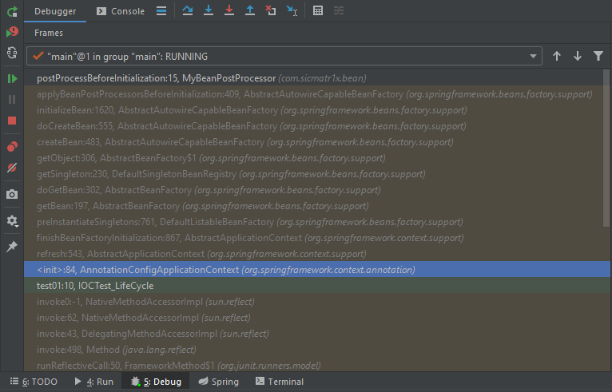

<!DOCTYPE html>


<html lang="en">


<head>
  <meta charset="utf-8" />
    
  <meta name="viewport" content="width=device-width, initial-scale=1, maximum-scale=1" />
  <title>
    Spring注解驱动开发 |  
  </title>
  <meta name="generator" content="hexo-theme-ayer">
  
  <link rel="shortcut icon" href="/favicon.ico" />
  
  <link rel="stylesheet" href="/dist/main.css">
  <link rel="stylesheet" href="https://cdn.jsdelivr.net/gh/Shen-Yu/cdn/css/remixicon.min.css">
  <link rel="stylesheet" href="/css/custom.css">
  
  <script src="https://cdn.jsdelivr.net/npm/pace-js@1.0.2/pace.min.js"></script>
  
  

  

</head>

</html>

<body>
  <div id="app">
    
      
    <main class="content on">
      <section class="outer">
  <article
  id="post-Spring注解驱动开发"
  class="article article-type-post"
  itemscope
  itemprop="blogPost"
  data-scroll-reveal
>
  <div class="article-inner">
    
    <header class="article-header">
       
<h1 class="article-title sea-center" style="border-left:0" itemprop="name">
  Spring注解驱动开发
</h1>
 

    </header>
     
    <div class="article-meta">
      <a href="/2020/05/12/Spring%E6%B3%A8%E8%A7%A3%E9%A9%B1%E5%8A%A8%E5%BC%80%E5%8F%91/" class="article-date">
  <time datetime="2020-05-12T08:02:27.000Z" itemprop="datePublished">2020-05-12</time>
</a> 
  <div class="article-category">
    <a class="article-category-link" href="/categories/%E5%90%8E%E7%AB%AF/">后端</a>
  </div>
  
<div class="word_count">
    <span class="post-time">
        <span class="post-meta-item-icon">
            <i class="ri-quill-pen-line"></i>
            <span class="post-meta-item-text"> Word count:</span>
            <span class="post-count">15.7k</span>
        </span>
    </span>

    <span class="post-time">
        &nbsp; | &nbsp;
        <span class="post-meta-item-icon">
            <i class="ri-book-open-line"></i>
            <span class="post-meta-item-text"> Reading time≈</span>
            <span class="post-count">81 min</span>
        </span>
    </span>
</div>
 
    </div>
      
    <div class="tocbot"></div>


  
    <div class="article-entry" itemprop="articleBody">
       
  <h2 id="容器"><a href="#容器" class="headerlink" title="容器"></a>容器</h2><h3 id="组件注册"><a href="#组件注册" class="headerlink" title="组件注册"></a>组件注册</h3><h4 id="Configuration-amp-Bean-给容器中注册组件"><a href="#Configuration-amp-Bean-给容器中注册组件" class="headerlink" title="@Configuration &amp; @Bean 给容器中注册组件"></a><code>@Configuration</code> &amp; <code>@Bean</code> 给容器中注册组件</h4><p>配置类相当于以前的配置文件<code>beans.xml</code></p>
<p>配置类：</p>
<pre><code class="java">package com.sicmatr1x.config;

import com.sicmatr1x.bean.Person;
import org.springframework.context.annotation.Bean;
import org.springframework.context.annotation.ComponentScan;
import org.springframework.context.annotation.ComponentScan.Filter;
import org.springframework.context.annotation.Configuration;
import org.springframework.context.annotation.FilterType;
import org.springframework.stereotype.Controller;

@Configuration // 告诉Spring这是一个配置类
@ComponentScan(value = &quot;com.sicmatr1x&quot;, excludeFilters = {
        @Filter(type = FilterType.ANNOTATION, classes = {Controller.class})
}) // 手动配置包扫描，扫描com.sicmatr1x包下的内容，exclude可以排除不想注入的类，这里按照注解排除了使用到Controller注解的类
// @ComponentScan value:指定要扫描的包
// excludeFilters = Filter[] 指定扫描的时候按照什么规则排除哪些组件
// includeFilters = Filter[] 指定扫描的时候按照什么规则包含哪些组件
// useDefaultFilters = false 可以关闭默认的filter
public class MainConfig {
    @Bean(&quot;person&quot;) // 给容器中注册一个bean，类型为返回值的类型，id默认为方法名，也可自定义
    public Person person(){
        return new Person(&quot;Abby&quot;, 20);
    }
}
</code></pre>
<p>测试配置类：</p>
<pre><code class="java">package com.sicmatr1x.test;

import com.sicmatr1x.bean.Person;
import com.sicmatr1x.config.MainConfig;
import org.springframework.context.ApplicationContext;
import org.springframework.context.annotation.AnnotationConfigApplicationContext;
import org.springframework.context.support.ClassPathXmlApplicationContext;

public class MainTest {
    public static void main(String[] args) {
        // 传统xml方式
//        ApplicationContext applicationContext = new ClassPathXmlApplicationContext(&quot;bean.xml&quot;);
//        Person bean = (Person) applicationContext.getBean(&quot;person&quot;);
//        System.out.println(bean);

        // 以前传配置文件，现在传配置类
        ApplicationContext applicationContext = new AnnotationConfigApplicationContext(MainConfig.class);
        Person bean = applicationContext.getBean(Person.class);
        System.out.println(bean);
    }
}
</code></pre>
<h4 id="ComponentScan-自动扫描组件-amp-指定扫描规则"><a href="#ComponentScan-自动扫描组件-amp-指定扫描规则" class="headerlink" title="@ComponentScan 自动扫描组件&amp;指定扫描规则"></a><code>@ComponentScan</code> 自动扫描组件&amp;指定扫描规则</h4><p>查看IOT容器里面有哪些对象：</p>
<pre><code class="java">import com.sicmatr1x.config.MainConfig;
import org.junit.Test;
import org.springframework.context.annotation.AnnotationConfigApplicationContext;

public class IOCTest {

    @SuppressWarnings(&quot;resource&quot;)
    @Test
    public void test01(){
        AnnotationConfigApplicationContext annotationConfigApplicationContext = new AnnotationConfigApplicationContext(MainConfig.class);
        String[] beanNames = annotationConfigApplicationContext.getBeanDefinitionNames();
        for (String beanName : beanNames) {
            System.out.println(beanName);
        }
    }
}
</code></pre>
<p>运行结果：</p>
<pre><code>org.springframework.context.annotation.internalConfigurationAnnotationProcessor
org.springframework.context.annotation.internalAutowiredAnnotationProcessor
org.springframework.context.annotation.internalRequiredAnnotationProcessor
org.springframework.context.annotation.internalCommonAnnotationProcessor
org.springframework.context.event.internalEventListenerProcessor
org.springframework.context.event.internalEventListenerFactory
mainConfig
bookDao
bookService
person</code></pre><p>因为上面使用了<code>excludeFilters = {@Filter(type = FilterType.ANNOTATION, classes = {Controller.class}</code>所以IOT容器中注入了除了<code>BookController</code>以外的其它位于包<code>com.sicmatr1x</code>下的类的对象</p>
<p>我们再看下其它的Filter，进入到<code>FilterType.class</code>里面</p>
<p>FilterType.java:</p>
<pre><code class="java">/*
 * Copyright 2002-2013 the original author or authors.
 *
 * Licensed under the Apache License, Version 2.0 (the &quot;License&quot;);
 * you may not use this file except in compliance with the License.
 * You may obtain a copy of the License at
 *
 *      http://www.apache.org/licenses/LICENSE-2.0
 *
 * Unless required by applicable law or agreed to in writing, software
 * distributed under the License is distributed on an &quot;AS IS&quot; BASIS,
 * WITHOUT WARRANTIES OR CONDITIONS OF ANY KIND, either express or implied.
 * See the License for the specific language governing permissions and
 * limitations under the License.
 */

package org.springframework.context.annotation;

/**
 * Enumeration of the type filters that may be used in conjunction with
 * {@link ComponentScan @ComponentScan}.
 *
 * @author Mark Fisher
 * @author Juergen Hoeller
 * @author Chris Beams
 * @since 2.5
 * @see ComponentScan
 * @see ComponentScan#includeFilters()
 * @see ComponentScan#excludeFilters()
 * @see org.springframework.core.type.filter.TypeFilter
 */
public enum FilterType {

    /**
     * Filter candidates marked with a given annotation.
     * @see org.springframework.core.type.filter.AnnotationTypeFilter
     */
    ANNOTATION,

    /**
     * Filter candidates assignable to a given type.
     * @see org.springframework.core.type.filter.AssignableTypeFilter
     */
    ASSIGNABLE_TYPE,

    /**
     * Filter candidates matching a given AspectJ type pattern expression.
     * @see org.springframework.core.type.filter.AspectJTypeFilter
     */
    ASPECTJ,

    /**
     * Filter candidates matching a given regex pattern.
     * @see org.springframework.core.type.filter.RegexPatternTypeFilter
     */
    REGEX,

    /** Filter candidates using a given custom
     * {@link org.springframework.core.type.filter.TypeFilter} implementation.
     */
    CUSTOM

}
</code></pre>
<ul>
<li><code>ANNOTATION</code>: 按照注解来进行过滤<ul>
<li>eg: <code>@Filter(type = FilterType.ANNOTATION, classes = {Controller.class}</code></li>
</ul>
</li>
<li><code>ASSIGNABLE_TYPE</code>: 按照给定的类型来进行过滤<ul>
<li>eg: <code>@Filter(type = FilterType.ASSIGNABLE_TYPE, classes = {BookController.class}</code></li>
</ul>
</li>
<li><code>ASPECTJ</code>: 按照AspectJ表达式来进行过滤</li>
<li><code>REGEX</code>: 按照正则表达式来进行过滤</li>
<li><code>CUSTOM</code>: 按照自定义规则来进行过滤，需要自定义一个<code>org.springframework.core.type.filter.TypeFilter</code>的实现类</li>
</ul>
<h4 id="自定义TypeFilter指定过滤规则"><a href="#自定义TypeFilter指定过滤规则" class="headerlink" title="自定义TypeFilter指定过滤规则"></a>自定义TypeFilter指定过滤规则</h4><p>实现<code>org.springframework.core.type.filter.TypeFilter</code>类：</p>
<pre><code class="java">package com.sicmatr1x.config;

import org.springframework.core.io.Resource;
import org.springframework.core.type.AnnotationMetadata;
import org.springframework.core.type.ClassMetadata;
import org.springframework.core.type.classreading.MetadataReader;
import org.springframework.core.type.classreading.MetadataReaderFactory;
import org.springframework.core.type.filter.TypeFilter;

import java.io.IOException;

public class MyTypeFilter implements TypeFilter {
    /**
     *
     * @param metadataReader the metadata reader for the target class 读取到当前正在扫描的类的信息
     * @param metadataReaderFactory a factory for obtaining metadata readers 可以获取到其它任何类信息的
     * @return true: 匹配成功; false: 匹配失败
     * @throws IOException
     */
    @Override
    public boolean match(MetadataReader metadataReader, MetadataReaderFactory metadataReaderFactory) throws IOException {
        // 获取当前类注解的信息
        AnnotationMetadata annotationMetadata = metadataReader.getAnnotationMetadata();
        // 获取当前正在扫描的类的类信息
        ClassMetadata classMetadata = metadataReader.getClassMetadata();
        // 获取当前类资源(类路径等)信息
        Resource resource = metadataReader.getResource();

        String className = classMetadata.getClassName();
        System.out.println(&quot;className:&quot; + className);
        return false;
    }
}
</code></pre>
<p>在Config类里面使用我们的Filter类：</p>
<pre><code class="java">package com.sicmatr1x.config;

import com.sicmatr1x.bean.Person;
import org.springframework.context.annotation.Bean;
import org.springframework.context.annotation.ComponentScan;
import org.springframework.context.annotation.ComponentScan.Filter;
import org.springframework.context.annotation.Configuration;
import org.springframework.context.annotation.FilterType;

@Configuration
@ComponentScan(value = &quot;com.sicmatr1x&quot;, excludeFilters = {
        @Filter(type = FilterType.CUSTOM, classes = {MyTypeFilter.class})
})
public class MainConfig {
    @Bean(&quot;person&quot;)
    public Person person(){
        return new Person(&quot;Abby&quot;, 20);
    }
}
</code></pre>
<p>输出：</p>
<pre><code>className:com.sicmatr1x.bean.Person
className:com.sicmatr1x.config.MyTypeFilter
className:com.sicmatr1x.controller.BookController
className:com.sicmatr1x.dao.BookDao
className:com.sicmatr1x.service.BookService
className:com.sicmatr1x.test.MainTest
org.springframework.context.annotation.internalConfigurationAnnotationProcessor
org.springframework.context.annotation.internalAutowiredAnnotationProcessor
org.springframework.context.annotation.internalRequiredAnnotationProcessor
org.springframework.context.annotation.internalCommonAnnotationProcessor
org.springframework.context.event.internalEventListenerProcessor
org.springframework.context.event.internalEventListenerFactory
mainConfig
bookController
bookDao
bookService
person
</code></pre><p>这里没有类被排除是因为我们的自定义规则里面总是返回false，所以一个都没有被排除</p>
<p>修改一下代码：</p>
<pre><code class="java">package com.sicmatr1x.config;

import org.springframework.core.io.Resource;
import org.springframework.core.type.AnnotationMetadata;
import org.springframework.core.type.ClassMetadata;
import org.springframework.core.type.classreading.MetadataReader;
import org.springframework.core.type.classreading.MetadataReaderFactory;
import org.springframework.core.type.filter.TypeFilter;

import java.io.IOException;

public class MyTypeFilter implements TypeFilter {
    /**
     *
     * @param metadataReader the metadata reader for the target class 读取到当前正在扫描的类的信息
     * @param metadataReaderFactory a factory for obtaining metadata readers 可以获取到其它任何类信息的
     * @return true: 匹配成功; false: 匹配失败
     * @throws IOException
     */
    @Override
    public boolean match(MetadataReader metadataReader, MetadataReaderFactory metadataReaderFactory) throws IOException {
        // 获取当前类注解的信息
        AnnotationMetadata annotationMetadata = metadataReader.getAnnotationMetadata();
        // 获取当前正在扫描的类的类信息
        ClassMetadata classMetadata = metadataReader.getClassMetadata();
        // 获取当前类资源(类路径等)信息
        Resource resource = metadataReader.getResource();

        String className = classMetadata.getClassName();
        System.out.println(&quot;className:&quot; + className);
        if(className.contains(&quot;er&quot;)) {
            return true;
        }
        return false;
    }
}
</code></pre>
<p>输出：</p>
<pre><code>className:com.sicmatr1x.bean.Person
className:com.sicmatr1x.config.MyTypeFilter
className:com.sicmatr1x.controller.BookController
className:com.sicmatr1x.dao.BookDao
className:com.sicmatr1x.service.BookService
className:com.sicmatr1x.test.MainTest
org.springframework.context.annotation.internalConfigurationAnnotationProcessor
org.springframework.context.annotation.internalAutowiredAnnotationProcessor
org.springframework.context.annotation.internalRequiredAnnotationProcessor
org.springframework.context.annotation.internalCommonAnnotationProcessor
org.springframework.context.event.internalEventListenerProcessor
org.springframework.context.event.internalEventListenerFactory
mainConfig
bookDao
person</code></pre><p>与之前相比少了bookController, bookService，其实这里还排除了MyTypeFilter，不过这个类本来就用<code>annotationConfigApplicationContext.getBeanDefinitionNames()</code>获取不出来所以看不出效果</p>
<h4 id="Scope-设置组件作用域"><a href="#Scope-设置组件作用域" class="headerlink" title="@Scope 设置组件作用域"></a><code>@Scope</code> 设置组件作用域</h4><p>众所周知，在spring里面注册一个bean并托管到IOT容器中之后该bean是单实例的，无论你get几次都是获得的同一个对象</p>
<p>可以使用<code>@Scope</code>注解来限定对象范围</p>
<pre><code class="java">package com.sicmatr1x.config;

import com.sicmatr1x.bean.Person;
import org.springframework.context.annotation.Bean;
import org.springframework.context.annotation.Configuration;
import org.springframework.context.annotation.Scope;

@Configuration
public class MainConfig2 {
    @Scope
    @Bean(&quot;person&quot;)
    public Person person(){
        return new Person(&quot;Bob&quot;, 30);
    }
}
</code></pre>
<p>点进<code>@Scope</code>注解里面看一下：</p>
<pre><code class="java">/*
 * Copyright 2002-2015 the original author or authors.
 *
 * Licensed under the Apache License, Version 2.0 (the &quot;License&quot;);
 * you may not use this file except in compliance with the License.
 * You may obtain a copy of the License at
 *
 *      http://www.apache.org/licenses/LICENSE-2.0
 *
 * Unless required by applicable law or agreed to in writing, software
 * distributed under the License is distributed on an &quot;AS IS&quot; BASIS,
 * WITHOUT WARRANTIES OR CONDITIONS OF ANY KIND, either express or implied.
 * See the License for the specific language governing permissions and
 * limitations under the License.
 */

package org.springframework.context.annotation;

import java.lang.annotation.Documented;
import java.lang.annotation.ElementType;
import java.lang.annotation.Retention;
import java.lang.annotation.RetentionPolicy;
import java.lang.annotation.Target;

import org.springframework.beans.factory.config.ConfigurableBeanFactory;
import org.springframework.core.annotation.AliasFor;

/**
 * When used as a type-level annotation in conjunction with
 * {@link org.springframework.stereotype.Component @Component},
 * {@code @Scope} indicates the name of a scope to use for instances of
 * the annotated type.
 *
 * &lt;p&gt;When used as a method-level annotation in conjunction with
 * {@link Bean @Bean}, {@code @Scope} indicates the name of a scope to use
 * for the instance returned from the method.
 *
 * &lt;p&gt;In this context, &lt;em&gt;scope&lt;/em&gt; means the lifecycle of an instance,
 * such as {@code singleton}, {@code prototype}, and so forth. Scopes
 * provided out of the box in Spring may be referred to using the
 * {@code SCOPE_*} constants available in the {@link ConfigurableBeanFactory}
 * and {@code WebApplicationContext} interfaces.
 *
 * &lt;p&gt;To register additional custom scopes, see
 * {@link org.springframework.beans.factory.config.CustomScopeConfigurer
 * CustomScopeConfigurer}.
 *
 * @author Mark Fisher
 * @author Chris Beams
 * @author Sam Brannen
 * @since 2.5
 * @see org.springframework.stereotype.Component
 * @see org.springframework.context.annotation.Bean
 */
@Target({ElementType.TYPE, ElementType.METHOD})
@Retention(RetentionPolicy.RUNTIME)
@Documented
public @interface Scope {

    /**
     * Alias for {@link #scopeName}.
     * @see #scopeName
     */
    @AliasFor(&quot;scopeName&quot;)
    String value() default &quot;&quot;;

    /**
     * Specifies the name of the scope to use for the annotated component/bean.
     * &lt;p&gt;Defaults to an empty string ({@code &quot;&quot;}) which implies
     * {@link ConfigurableBeanFactory#SCOPE_SINGLETON SCOPE_SINGLETON}.
     * @since 4.2
     * @see ConfigurableBeanFactory#SCOPE_PROTOTYPE
     * @see ConfigurableBeanFactory#SCOPE_SINGLETON
     * @see org.springframework.web.context.WebApplicationContext#SCOPE_REQUEST
     * @see org.springframework.web.context.WebApplicationContext#SCOPE_SESSION
     * @see #value
     */
    @AliasFor(&quot;value&quot;)
    String scopeName() default &quot;&quot;;

    /**
     * Specifies whether a component should be configured as a scoped proxy
     * and if so, whether the proxy should be interface-based or subclass-based.
     * &lt;p&gt;Defaults to {@link ScopedProxyMode#DEFAULT}, which typically indicates
     * that no scoped proxy should be created unless a different default
     * has been configured at the component-scan instruction level.
     * &lt;p&gt;Analogous to {@code &lt;aop:scoped-proxy/&gt;} support in Spring XML.
     * @see ScopedProxyMode
     */
    ScopedProxyMode proxyMode() default ScopedProxyMode.DEFAULT;

}
</code></pre>
<p>这里的<code>@AliasFor</code>注解是别名的意思，就是给其注解的字段一个别名，比如这里<code>value</code>就和<code>scopeName</code>等价了</p>
<p>我们看下<code>value</code>能取哪些值，注释中就说了可以取以下类中的以下的值</p>
<p>类名#值：</p>
<ul>
<li>ConfigurableBeanFactory#SCOPE_PROTOTYPE</li>
<li>ConfigurableBeanFactory#SCOPE_SINGLETON</li>
<li>org.springframework.web.context.WebApplicationContext#SCOPE_REQUEST</li>
<li>org.springframework.web.context.WebApplicationContext#SCOPE_SESSION</li>
</ul>
<p>点进<code>ConfigurableBeanFactory</code>中：</p>
<pre><code class="java">public interface ConfigurableBeanFactory extends HierarchicalBeanFactory, SingletonBeanRegistry {
    String SCOPE_SINGLETON = &quot;singleton&quot;;
    String SCOPE_PROTOTYPE = &quot;prototype&quot;;
    //...
}</code></pre>
<p>可知：<code>SCOPE_PROTOTYPE</code>的值为<code>prototype</code>，其它以此类推</p>
<p><code>value</code>能取：</p>
<ul>
<li><code>singleton</code>: 单实例（默认值），IOC容器启动时会调用方法创建对象并托管到IOC容器中，以后每次获取直接从容器中拿</li>
<li><code>prototype</code>: 多实例，IOC容器启动时并不会调用方法创建对象，而是每次获取的时候才会调用方法创建对象，每次获取都会调一遍方法</li>
<li><code>request</code>: 同一次请求创建一个实例</li>
<li><code>session</code>: 同一个session创建一个实例</li>
</ul>
<p>我们使用<code>prototype</code>试下：</p>
<pre><code class="java">package com.sicmatr1x.config;

import com.sicmatr1x.bean.Person;
import org.springframework.context.annotation.Bean;
import org.springframework.context.annotation.Configuration;
import org.springframework.context.annotation.Scope;

@Configuration
public class MainConfig2 {
    @Scope(&quot;prototype&quot;)
    @Bean(&quot;person&quot;)
    public Person person(){
        return new Person(&quot;Bob&quot;, 30);
    }
}
</code></pre>
<p>测试方法：</p>
<pre><code class="java">    @SuppressWarnings(&quot;resource&quot;)
    @Test
    public void test02(){
        AnnotationConfigApplicationContext annotationConfigApplicationContext = new AnnotationConfigApplicationContext(MainConfig2.class);
        String[] beanNames = annotationConfigApplicationContext.getBeanDefinitionNames();
        for (String beanName : beanNames) {
            System.out.println(beanName);
        }
        Object bean = annotationConfigApplicationContext.getBean(&quot;person&quot;);
        Object bean2 = annotationConfigApplicationContext.getBean(&quot;person&quot;);
        System.out.println(&quot;bean == bean2: &quot; + (bean == bean2));
    }</code></pre>
<p>输出：</p>
<pre><code>org.springframework.context.annotation.internalConfigurationAnnotationProcessor
org.springframework.context.annotation.internalAutowiredAnnotationProcessor
org.springframework.context.annotation.internalRequiredAnnotationProcessor
org.springframework.context.annotation.internalCommonAnnotationProcessor
org.springframework.context.event.internalEventListenerProcessor
org.springframework.context.event.internalEventListenerFactory
mainConfig2
person
bean == bean2: false
</code></pre><p>可以看到已经不是单例了</p>
<h4 id="Lazy-bean-懒加载"><a href="#Lazy-bean-懒加载" class="headerlink" title="@Lazy-bean 懒加载"></a><code>@Lazy-bean</code> 懒加载</h4><p>懒加载主要针对单实例bean，单实例通常情况下IOC容器启动时会调用方法创建对象并托管到IOC容器中，以后每次获取直接从容器中拿。如果启用懒加载则会使得容器在启动时不创建对象，而是在第一次使用(获取)bean时创建对象</p>
<pre><code class="java">    @Lazy
    @Bean(&quot;person&quot;)
    public Person person(){
        return new Person(&quot;Bob&quot;, 30);
    }</code></pre>
<h4 id="Conditional-按照条件注册bean"><a href="#Conditional-按照条件注册bean" class="headerlink" title="@Conditional 按照条件注册bean"></a><code>@Conditional</code> 按照条件注册bean</h4><p>该注解在spring底层大量使用，主要作用是按照一定的条件进行判断满足条件给容器中注册bean</p>
<p>那么该如何使用<code>@Conditional</code>注解呢，我们点进去看到需要提供一个实现了<code>Condition</code>接口的类</p>
<pre><code class="java">package org.springframework.context.annotation;

import java.lang.annotation.Documented;
import java.lang.annotation.ElementType;
import java.lang.annotation.Retention;
import java.lang.annotation.RetentionPolicy;
import java.lang.annotation.Target;

@Target({ElementType.TYPE, ElementType.METHOD})
@Retention(RetentionPolicy.RUNTIME)
@Documented
public @interface Conditional {

    /**
     * All {@link Condition}s that must {@linkplain Condition#matches match}
     * in order for the component to be registered.
     */
    Class&lt;? extends Condition&gt;[] value();

}</code></pre>
<p><code>@Target({ElementType.TYPE, ElementType.METHOD})</code>, 显然<code>@Conditional</code>注解可以用于方法和类</p>
<p>点进去看下<code>Condition</code>接口：</p>
<pre><code class="java">public interface Condition {

    /**
     * Determine if the condition matches.
     * @param context the condition context
     * @param metadata metadata of the {@link org.springframework.core.type.AnnotationMetadata class}
     * or {@link org.springframework.core.type.MethodMetadata method} being checked.
     * @return {@code true} if the condition matches and the component can be registered
     * or {@code false} to veto registration.
     */
    boolean matches(ConditionContext context, AnnotatedTypeMetadata metadata);

}</code></pre>
<p>显然需要实现<code>matches</code>方法，并且若返回为true则表示条件匹配成功</p>
<p>假设我们需要做一个根据操作系统来判断并注入对应的bean的功能</p>
<pre><code class="java">package com.sicmatr1x.condition;

import org.springframework.beans.factory.config.ConfigurableListableBeanFactory;
import org.springframework.beans.factory.support.BeanDefinitionRegistry;
import org.springframework.context.annotation.Condition;
import org.springframework.context.annotation.ConditionContext;
import org.springframework.core.env.Environment;
import org.springframework.core.type.AnnotatedTypeMetadata;

public class LinuxCondition implements Condition {
    /**
     * 判断是否为Linux系统
     * @param context 判断条件能使用的上下文环境
     * @param metadata 注解信息
     * @return
     */
    @Override
    public boolean matches(ConditionContext context, AnnotatedTypeMetadata metadata) {
        // 能获取到IOC使用的beanFactory
        ConfigurableListableBeanFactory beanFactory = context.getBeanFactory();
        // 能获取到类加载器
        ClassLoader classLoader = context.getClassLoader();
        // 能获取到当前环境信息
        Environment environment = context.getEnvironment();
        // 能获取到bean定义的注册类(可用于查某个bean的定义或者注册bean)
        BeanDefinitionRegistry registry = context.getRegistry();
        String property = environment.getProperty(&quot;os.name&quot;);
        if(property.contains(&quot;Linux&quot;)) {
            return true;
        }
        return false;
    }
}
</code></pre>
<pre><code class="java">package com.sicmatr1x.condition;

import org.springframework.context.annotation.Condition;
import org.springframework.context.annotation.ConditionContext;
import org.springframework.core.env.Environment;
import org.springframework.core.type.AnnotatedTypeMetadata;

public class WindowsCondition implements Condition {
    @Override
    public boolean matches(ConditionContext context, AnnotatedTypeMetadata metadata) {
        // 能获取到当前环境信息
        Environment environment = context.getEnvironment();
        String property = environment.getProperty(&quot;os.name&quot;);
        if(property.contains(&quot;Windows&quot;)) {
            return true;
        }
        return false;
    }
}
</code></pre>
<p>然后使用<code>@Conditional</code>注解</p>
<pre><code class="java">    @Conditional({WindowsCondition.class})
    @Bean(&quot;bill&quot;)
    public Person person01(){
        return new Person(&quot;Bill&quot;, 60);
    }

    @Conditional({LinuxCondition.class})
    @Bean(&quot;Linus&quot;)
    public Person person02(){
        return new Person(&quot;Linus&quot;, 50);
    }</code></pre>
<p>测试一下效果：</p>
<pre><code class="java">    @SuppressWarnings(&quot;resource&quot;)
    @Test
    public void test03(){
        AnnotationConfigApplicationContext annotationConfigApplicationContext = new AnnotationConfigApplicationContext(MainConfig2.class);
        ConfigurableEnvironment environment = annotationConfigApplicationContext.getEnvironment();
        String property = environment.getProperty(&quot;os.name&quot;);
        System.out.println(property);
        String[] namesForType = annotationConfigApplicationContext.getBeanNamesForType(Person.class);
        for (String name : namesForType) {
            System.out.println(name);
        }
        Map&lt;String, Person&gt; persons = annotationConfigApplicationContext.getBeansOfType(Person.class);
    }</code></pre>
<p>输出：</p>
<pre><code>Windows 10
person
bill</code></pre><p>这里打印出了我们当前的操作系统为Windows 10，然后正确的注入了bill这个bean到IOT容器</p>
<p>测试Linux可以在VM arguments里面配置虚拟机参数：</p>
<pre><code>-Dos.name=Linux</code></pre><p>输出：</p>
<pre><code>Linux
person
Linus</code></pre><p><code>@Conditional</code>注解还可以放在类上，作用是满足当前条件后这个类中配置的所有bean才能生效</p>
<h4 id="容器中注册组件方法"><a href="#容器中注册组件方法" class="headerlink" title="容器中注册组件方法"></a>容器中注册组件方法</h4><ol>
<li>包扫描+组件标注注解(<code>@Controller</code>, <code>@Service</code>, <code>@Component</code>)<ul>
<li>缺点：只能作用在自己写的类上，即需要修改需要注册的类的代码，导入的第三方包不可以采用此种方法</li>
</ul>
</li>
<li><code>@Bean</code>注解，手动注册</li>
<li><code>@Import</code>注解，快速导入组件到容器，id默认是全类名</li>
</ol>
<h4 id="Import-给容器中快速导入一个组件"><a href="#Import-给容器中快速导入一个组件" class="headerlink" title="@Import 给容器中快速导入一个组件"></a><code>@Import</code> 给容器中快速导入一个组件</h4><pre><code class="java">package com.sicmatr1x.config;

import com.sicmatr1x.bean.Color;
import org.springframework.context.annotation.*;

@Configuration
@Import(Color.class)
public class MainConfig2 {

}</code></pre>
<p>批量导入：</p>
<pre><code class="java">package com.sicmatr1x.config;

import com.sicmatr1x.bean.Color;
import com.sicmatr1x.bean.Red;
import org.springframework.context.annotation.*;

@Configuration
@Import({Color.class, Red.class})
public class MainConfig2 {

}</code></pre>
<h4 id="Import-使用ImportSelector"><a href="#Import-使用ImportSelector" class="headerlink" title="@Import 使用ImportSelector"></a><code>@Import</code> 使用ImportSelector</h4><p>这种方法在spring源码用用到的较多</p>
<p>查看<code>@Import</code>的源码发现除了通常的组件类(regular component classes)作为参数传入以外还可以传入<code>Configuration</code>, <code>ImportSelector</code>, <code>ImportBeanDefinitionRegistrar</code></p>
<pre><code class="java">@Target(ElementType.TYPE)
@Retention(RetentionPolicy.RUNTIME)
@Documented
public @interface Import {

    /**
     * {@link Configuration}, {@link ImportSelector}, {@link ImportBeanDefinitionRegistrar}
     * or regular component classes to import.
     */
    Class&lt;?&gt;[] value();

}</code></pre>
<p>查看<code>ImportSelector</code>源码: </p>
<pre><code class="java">public interface ImportSelector {

    /**
     * Select and return the names of which class(es) should be imported based on
     * the {@link AnnotationMetadata} of the importing @{@link Configuration} class.
     */
    String[] selectImports(AnnotationMetadata importingClassMetadata);

}</code></pre>
<blockquote>
<p>Select and return the names of which class(es) should be imported</p>
</blockquote>
<p>显然<code>selectImports</code>方法会返回需要导入的类的全类名组成的数组</p>
<p>在本项目中只有<code>MainConfig2</code>类里面使用到了<code>@Import</code>注解</p>
<pre><code class="java">@Configuration
@Import({Color.class, MyImportSelector.class})
public class MainConfig2 {
    //...
}</code></pre>
<p>我们打个断点到<code>selectImports</code>方法上看看传入的参数：</p>


<p>可以看到<code>importingClassMetadata</code>对象包含的：</p>
<ul>
<li><code>annotations</code>对象数组里面获取到了<code>MainConfig2</code>类上面的2个注解</li>
<li><code>introspectedClass</code>对象则获取到了<code>MainConfig2</code>类的类信息</li>
</ul>
<p>继续debug就可发现：若返回为null则会抛出空指针异常</p>
<pre><code class="java">    /**
     * Factory method to obtain {@link SourceClass}s from class names.
     */
    private Collection&lt;SourceClass&gt; asSourceClasses(String[] classNames) throws IOException {
        List&lt;SourceClass&gt; annotatedClasses = new ArrayList&lt;SourceClass&gt;(classNames.length); // 这里调到了classNames.length，若返回为空，显然null没有length属性
        for (String className : classNames) {
            annotatedClasses.add(asSourceClass(className));
        }
        return annotatedClasses;
    }</code></pre>
<p>推荐在没有class返回的情况下返回一个空数组</p>
<p>实践一下：</p>
<pre><code class="java">package com.sicmatr1x.condition;

import org.springframework.context.annotation.ImportSelector;
import org.springframework.core.type.AnnotationMetadata;

public class MyImportSelector implements ImportSelector {
    /**
     *
     * @param importingClassMetadata 当前标注@Import注解的类的所有的类的信息
     * @return 返回需要导入的类的全类名
     */
    @Override
    public String[] selectImports(AnnotationMetadata importingClassMetadata) {

        return new String[]{&quot;com.sicmatr1x.bean.Blue&quot;, &quot;com.sicmatr1x.bean.Yellow&quot;};
    }
}
</code></pre>
<p>运行unit test，可以看到已经注册进来了</p>
<pre><code>mainConfig2
com.sicmatr1x.bean.Color
com.sicmatr1x.bean.Blue
com.sicmatr1x.bean.Yellow
person
bill</code></pre><h4 id="Import-使用ImportBeanDefinitionRegistrar"><a href="#Import-使用ImportBeanDefinitionRegistrar" class="headerlink" title="@Import 使用ImportBeanDefinitionRegistrar"></a><code>@Import</code> 使用ImportBeanDefinitionRegistrar</h4><p>从<code>@Import</code>源码里面继续点进去看<code>ImportBeanDefinitionRegistrar</code>的源码：</p>
<pre><code class="java">public interface ImportBeanDefinitionRegistrar {

    /**
     * Register bean definitions as necessary based on the given annotation metadata of
     * the importing {@code @Configuration} class.
     * &lt;p&gt;Note that {@link BeanDefinitionRegistryPostProcessor} types may &lt;em&gt;not&lt;/em&gt; be
     * registered here, due to lifecycle constraints related to {@code @Configuration}
     * class processing.
     * @param importingClassMetadata annotation metadata of the importing class
     * @param registry current bean definition registry
     */
    public void registerBeanDefinitions(
            AnnotationMetadata importingClassMetadata, BeanDefinitionRegistry registry);

}</code></pre>
<ul>
<li><code>importingClassMetadata</code>: 当前类的一些注解信息</li>
<li><code>registry</code>: bean定义的注册类，可用于给程序中注册bean</li>
</ul>
<p>现在实现一下这个接口：</p>
<pre><code class="java">package com.sicmatr1x.condition;

import com.sicmatr1x.bean.RainBow;
import org.springframework.beans.factory.support.BeanDefinitionRegistry;
import org.springframework.beans.factory.support.RootBeanDefinition;
import org.springframework.context.annotation.ImportBeanDefinitionRegistrar;
import org.springframework.core.type.AnnotationMetadata;

public class MyImportBeanDefinitionRegistrar implements ImportBeanDefinitionRegistrar {
    /**
     * 把所有需要添加到容器中的bean，可以通过BeanDefinition注册类的registerBeanDefinition方法注册进IOT容器
     * @param importingClassMetadata 当前类的注解信息
     * @param registry BeanDefinition注册类，可用于给程序中注册bean
     */
    @Override
    public void registerBeanDefinitions(AnnotationMetadata importingClassMetadata, BeanDefinitionRegistry registry) {
        // 判断IOT容器中是否已经注册了red和blue
        boolean isRegisteredYellowClass = registry.containsBeanDefinition(&quot;com.sicmatr1x.bean.Yellow&quot;);
        boolean isRegisteredBlueClass = registry.containsBeanDefinition(&quot;com.sicmatr1x.bean.Blue&quot;);
        if(isRegisteredYellowClass &amp;&amp; isRegisteredBlueClass) {
            // 指定Bean定义信息(如Bean的类型、作用域等)
            RootBeanDefinition beanDefinition = new RootBeanDefinition(RainBow.class);
            // 注册bean，同时指定bean名
            registry.registerBeanDefinition(&quot;rainBow&quot;, beanDefinition);
        }
    }
}
</code></pre>
<p>使用方法同前面的<code>MyImportSelector</code>类：</p>
<pre><code class="java">@Configuration
@Import({Color.class, MyImportSelector.class, MyImportBeanDefinitionRegistrar.class})
public class MainConfig2 {
    //...
}</code></pre>
<p>运行unit test：</p>
<pre><code>mainConfig2
com.sicmatr1x.bean.Color
com.sicmatr1x.bean.Blue
com.sicmatr1x.bean.Yellow
person
bill
rainBow</code></pre><h4 id="使用FactoryBean注册组件"><a href="#使用FactoryBean注册组件" class="headerlink" title="使用FactoryBean注册组件"></a>使用FactoryBean注册组件</h4><p>使用前先看<code>FactoryBean</code>源码：</p>
<pre><code class="java">public interface FactoryBean&lt;T&gt; {

    /**
     * Return an instance (possibly shared or independent) of the object
     * managed by this factory.
     * &lt;p&gt;As with a {@link BeanFactory}, this allows support for both the
     * Singleton and Prototype design pattern.
     * &lt;p&gt;If this FactoryBean is not fully initialized yet at the time of
     * the call (for example because it is involved in a circular reference),
     * throw a corresponding {@link FactoryBeanNotInitializedException}.
     * &lt;p&gt;As of Spring 2.0, FactoryBeans are allowed to return {@code null}
     * objects. The factory will consider this as normal value to be used; it
     * will not throw a FactoryBeanNotInitializedException in this case anymore.
     * FactoryBean implementations are encouraged to throw
     * FactoryBeanNotInitializedException themselves now, as appropriate.
     * @return an instance of the bean (can be {@code null})
     * @throws Exception in case of creation errors
     * @see FactoryBeanNotInitializedException
     */
    T getObject() throws Exception;

    /**
     * Return the type of object that this FactoryBean creates,
     * or {@code null} if not known in advance.
     * &lt;p&gt;This allows one to check for specific types of beans without
     * instantiating objects, for example on autowiring.
     * &lt;p&gt;In the case of implementations that are creating a singleton object,
     * this method should try to avoid singleton creation as far as possible;
     * it should rather estimate the type in advance.
     * For prototypes, returning a meaningful type here is advisable too.
     * &lt;p&gt;This method can be called &lt;i&gt;before&lt;/i&gt; this FactoryBean has
     * been fully initialized. It must not rely on state created during
     * initialization; of course, it can still use such state if available.
     * &lt;p&gt;&lt;b&gt;NOTE:&lt;/b&gt; Autowiring will simply ignore FactoryBeans that return
     * {@code null} here. Therefore it is highly recommended to implement
     * this method properly, using the current state of the FactoryBean.
     * @return the type of object that this FactoryBean creates,
     * or {@code null} if not known at the time of the call
     * @see ListableBeanFactory#getBeansOfType
     */
    Class&lt;?&gt; getObjectType();

    /**
     * Is the object managed by this factory a singleton? That is,
     * will {@link #getObject()} always return the same object
     * (a reference that can be cached)?
     * &lt;p&gt;&lt;b&gt;NOTE:&lt;/b&gt; If a FactoryBean indicates to hold a singleton object,
     * the object returned from {@code getObject()} might get cached
     * by the owning BeanFactory. Hence, do not return {@code true}
     * unless the FactoryBean always exposes the same reference.
     * &lt;p&gt;The singleton status of the FactoryBean itself will generally
     * be provided by the owning BeanFactory; usually, it has to be
     * defined as singleton there.
     * &lt;p&gt;&lt;b&gt;NOTE:&lt;/b&gt; This method returning {@code false} does not
     * necessarily indicate that returned objects are independent instances.
     * An implementation of the extended {@link SmartFactoryBean} interface
     * may explicitly indicate independent instances through its
     * {@link SmartFactoryBean#isPrototype()} method. Plain {@link FactoryBean}
     * implementations which do not implement this extended interface are
     * simply assumed to always return independent instances if the
     * {@code isSingleton()} implementation returns {@code false}.
     * @return whether the exposed object is a singleton
     * @see #getObject()
     * @see SmartFactoryBean#isPrototype()
     */
    boolean isSingleton();

}</code></pre>
<p>可以看到有三个方法：</p>
<ol>
<li><code>T getObject() throws Exception</code>: 返回需要放到容器中的对象，这里是泛型也就是说工厂接口在实现时就已经确定了其只能返回某种类型的对象了</li>
<li><code>Class&lt;?&gt; getObjectType()</code>: 返回对象类型</li>
<li><code>boolean isSingleton();</code>: 是否为单例模式</li>
</ol>
<p>我们实现一下这个接口：</p>
<pre><code class="java">package com.sicmatr1x.bean;

import org.springframework.beans.factory.FactoryBean;

/**
 * 实现一个spring定义的工厂Bean
 */
public class ColorFactoryBean implements FactoryBean&lt;Color&gt; {
    /**
     *
     * @return 返回Color对象，并添加到容器中
     * @throws Exception
     */
    @Override
    public Color getObject() throws Exception {
        System.out.println(&quot;ColorFactoryBean:getObject()&quot;);
        return new Color();
    }

    @Override
    public Class&lt;?&gt; getObjectType() {
        return Color.class;
    }

    /**
     * true表明为单例，容器中只保存一份
     * @return
     */
    @Override
    public boolean isSingleton() {
        return true;
    }
}
</code></pre>
<p>配置类里注册一下<code>ColorFactoryBean</code>工厂</p>
<pre><code class="java">@Configuration
public class MainConfig2 {
    //...
    @Bean
    public ColorFactoryBean colorFactoryBean(){
        return new ColorFactoryBean();
    }
}</code></pre>
<p>unit test里从IOT容器中获取并打印一下我们的工厂的类型：</p>
<pre><code class="java">        // 工厂Bean获取的是调用getObject创建的对象
        Object factoryBean = annotationConfigApplicationContext.getBean(&quot;colorFactoryBean&quot;);
        Object factoryBean2 = annotationConfigApplicationContext.getBean(&quot;colorFactoryBean&quot;);
        System.out.println(&quot;ColorFactoryBean class is &quot; + factoryBean.getClass());
        System.out.println(factoryBean == factoryBean2);</code></pre>
<p>输出：</p>
<pre><code>ColorFactoryBean:getObject()
ColorFactoryBean class is class com.sicmatr1x.bean.Color
true</code></pre><p>可以发现我们的工厂Bean的类型居然是<code>Color</code>，说明我们从IOT容器中getBean结果其实get到的是调用<code>ColorFactoryBean.getObject()</code>返回的对象，再用getBean获取一下发现两次获取到的对象是一样的，这表明我们重写<code>isSingleton()</code>方法的返回值被spring用于判断是否为单例模式了</p>
<p>如果想获取到<code>ColorFactoryBean</code>本身的话可以通过在bean的id前增加一个<code>&amp;</code>字符来实现：</p>
<pre><code class="java">Object factoryBean = annotationConfigApplicationContext.getBean(&quot;&amp;colorFactoryBean&quot;);</code></pre>
<p>至于为什么是这个字符，可以去<code>BeanFactory</code>接口里面定义了<code>&amp;</code>字符</p>
<pre><code class="java">public interface BeanFactory {

    /**
     * Used to dereference a {@link FactoryBean} instance and distinguish it from
     * beans &lt;i&gt;created&lt;/i&gt; by the FactoryBean. For example, if the bean named
     * {@code myJndiObject} is a FactoryBean, getting {@code &amp;myJndiObject}
     * will return the factory, not the instance returned by the factory.
     */
    String FACTORY_BEAN_PREFIX = &quot;&amp;&quot;;
    //...
}</code></pre>
<hr>
<h3 id="生命周期"><a href="#生命周期" class="headerlink" title="生命周期"></a>生命周期</h3><h4 id="Bean指定初始化和销毁方法"><a href="#Bean指定初始化和销毁方法" class="headerlink" title="@Bean指定初始化和销毁方法"></a><code>@Bean</code>指定初始化和销毁方法</h4><p>Bean的生命周期：</p>
<ul>
<li>bean创建</li>
<li>初始化</li>
<li>销毁</li>
</ul>
<p>Bean的生命周期现在是由容器来管理的，我们可以自定义初始化和销毁方法，容器在bean进行到当前生命周期的时候会调用我们自定义的初始化或销毁方法</p>
<p>以下会讲4种实现方式：</p>
<ol>
<li>指定初始化和销毁方法</li>
</ol>
<p>以前是在<code>beans.xml</code>文件中指定初始化和销毁方法<code>init-method=&quot;&quot; destroy-method=&quot;&quot;</code></p>
<pre><code class="java">package com.sicmatr1x.bean;

public class Car {
    public Car(){
        System.out.println(&quot;Car:constructor&quot;);
    }

    public void init() {
        System.out.println(&quot;Car:init()&quot;);
    }

    public void destroy() {
        System.out.println(&quot;Car:destroy()&quot;);
    }
}
</code></pre>
<p>现在可以通过<code>@Bean</code>注解配置对应的方法</p>
<ul>
<li>初始化：对象创建完成并赋值好，调用初始化方法</li>
<li>销毁：容器关闭的时候，进行销毁</li>
</ul>
<p>写一个配置类：</p>
<pre><code class="java">package com.sicmatr1x.condition;

import com.sicmatr1x.bean.Car;
import org.springframework.context.annotation.Bean;
import org.springframework.context.annotation.Configuration;

@Configuration
public class MainConfigLifeCycle {

    @Bean(initMethod = &quot;init&quot;, destroyMethod = &quot;destroy&quot;)
    public Car car() {
        return new Car();
    }
}

</code></pre>
<p>unit test：</p>
<pre><code class="java">    @Test
    public void test01(){
        // 创建IOC容器
        AnnotationConfigApplicationContext annotationConfigApplicationContext = new AnnotationConfigApplicationContext(MainConfigLifeCycle.class);
        System.out.println(&quot;容器创建完成&quot;);
        annotationConfigApplicationContext.close();
        System.out.println(&quot;容器销毁完成&quot;);
    }</code></pre>
<p>输出：</p>
<pre><code>Car:constructor
Car:init()
容器创建完成
Car:destroy()
容器销毁完成</code></pre><p>在单实例模式下对象的初始化在容器创建完之后进行，销毁在容器销毁前完成</p>
<p>在多实例模式下对象的初始化在你获取时进行，容器不会管理这个bean，容器不会调用其销毁方法</p>
<h4 id="InitializingBean-amp-DisposableBean"><a href="#InitializingBean-amp-DisposableBean" class="headerlink" title="InitializingBean &amp; DisposableBean"></a><code>InitializingBean</code> &amp; <code>DisposableBean</code></h4><ol start="2">
<li>实现<code>InitializingBean</code> &amp; <code>DisposableBean</code>接口</li>
</ol>
<p>用于在bean初始化时执行自定义初始化逻辑的接口</p>
<p>当<code>BeanFactory</code>创建好对象并且给bean里所有的属性设置完成后会调用<code>InitializingBean.afterPropertiesSet()</code></p>
<pre><code class="java">public interface InitializingBean {

    /**
     * Invoked by a BeanFactory after it has set all bean properties supplied
     * (and satisfied BeanFactoryAware and ApplicationContextAware).
     * &lt;p&gt;This method allows the bean instance to perform initialization only
     * possible when all bean properties have been set and to throw an
     * exception in the event of misconfiguration.
     * @throws Exception in the event of misconfiguration (such
     * as failure to set an essential property) or if initialization fails.
     */
    void afterPropertiesSet() throws Exception;

}</code></pre>
<p>与之相对的在bean销毁时也有对应的接口：</p>
<pre><code class="java">public interface DisposableBean {

    /**
     * Invoked by a BeanFactory on destruction of a singleton.
     * @throws Exception in case of shutdown errors.
     * Exceptions will get logged but not rethrown to allow
     * other beans to release their resources too.
     */
    void destroy() throws Exception;

}</code></pre>
<p>给bean实现一下对应接口：</p>
<pre><code class="java">package com.sicmatr1x.bean;

import org.springframework.beans.factory.DisposableBean;
import org.springframework.beans.factory.InitializingBean;
import org.springframework.stereotype.Component;

@Component
public class Cat implements InitializingBean, DisposableBean {
    public Cat() {
        System.out.println(&quot;Cat:constructor()&quot;);
    }

    @Override
    public void destroy() throws Exception {
        System.out.println(&quot;Cat:destroy()&quot;);
    }

    @Override
    public void afterPropertiesSet() throws Exception {
        System.out.println(&quot;Cat:afterPropertiesSet()&quot;);
    }
}
</code></pre>
<p>运行一下unit test：</p>
<pre><code>Cat:constructor()
Cat:afterPropertiesSet()
Car:constructor
Car:init()
容器创建完成
Car:destroy()
Cat:destroy()
容器销毁完成</code></pre><h4 id="PostConstruct-amp-PreDestroy"><a href="#PostConstruct-amp-PreDestroy" class="headerlink" title="@PostConstruct &amp; @PreDestroy"></a><code>@PostConstruct</code> &amp; <code>@PreDestroy</code></h4><ol start="3">
<li>实现<code>@PostConstruct</code> &amp; <code>@PreDestroy</code>注解</li>
</ol>
<p><code>@PostConstruct</code> &amp; <code>@PreDestroy</code>注解在JSR250规范中被定义</p>
<p>话不多说，先看源码：</p>
<pre><code class="java">package javax.annotation;

import java.lang.annotation.*;
import static java.lang.annotation.ElementType.*;
import static java.lang.annotation.RetentionPolicy.*;

/**
 * The PostConstruct annotation is used on a method that needs to be executed
 * after dependency injection is done to perform any initialization. This
 * method MUST be invoked before the class is put into service. This
 * annotation MUST be supported on all classes that support dependency
 * injection. The method annotated with PostConstruct MUST be invoked even
 * if the class does not request any resources to be injected. Only one
 * method can be annotated with this annotation. The method on which the
 * PostConstruct annotation is applied MUST fulfill all of the following
 * criteria:
 * &lt;p&gt;
 * &lt;ul&gt;
 * &lt;li&gt;The method MUST NOT have any parameters except in the case of
 * interceptors in which case it takes an InvocationContext object as
 * defined by the Interceptors specification.&lt;/li&gt;
 * &lt;li&gt;The method defined on an interceptor class MUST HAVE one of the
 * following signatures:
 * &lt;p&gt;
 * void &amp;#060;METHOD&amp;#062;(InvocationContext)
 * &lt;p&gt;
 * Object &amp;#060;METHOD&amp;#062;(InvocationContext) throws Exception
 * &lt;p&gt;
 * &lt;i&gt;Note: A PostConstruct interceptor method must not throw application
 * exceptions, but it may be declared to throw checked exceptions including
 * the java.lang.Exception if the same interceptor method interposes on
 * business or timeout methods in addition to lifecycle events. If a
 * PostConstruct interceptor method returns a value, it is ignored by
 * the container.&lt;/i&gt;
 * &lt;/li&gt;
 * &lt;li&gt;The method defined on a non-interceptor class MUST HAVE the
 * following signature:
 * &lt;p&gt;
 * void &amp;#060;METHOD&amp;#062;()
 * &lt;/li&gt;
 * &lt;li&gt;The method on which PostConstruct is applied MAY be public, protected,
 * package private or private.&lt;/li&gt;
 * &lt;li&gt;The method MUST NOT be static except for the application client.&lt;/li&gt;
 * &lt;li&gt;The method MAY be final.&lt;/li&gt;
 * &lt;li&gt;If the method throws an unchecked exception the class MUST NOT be put into
 * service except in the case of EJBs where the EJB can handle exceptions and
 * even recover from them.&lt;/li&gt;&lt;/ul&gt;
 * @since Common Annotations 1.0
 * @see javax.annotation.PreDestroy
 * @see javax.annotation.Resource
 */
@Documented
@Retention (RUNTIME)
@Target(METHOD)
public @interface PostConstruct {
}
</code></pre>
<blockquote>
<p>The PostConstruct annotation is used on a method that needs to be executed after dependency injection is done to perform any initialization.</p>
</blockquote>
<p>显然这个注解的作用是用于在dependency injection(也就是bean创建完成且属性赋值完成)之后运行一个初始化方法</p>
<pre><code class="java">package javax.annotation;

import java.lang.annotation.*;
import static java.lang.annotation.ElementType.*;
import static java.lang.annotation.RetentionPolicy.*;

/**
 * The PreDestroy annotation is used on methods as a callback notification to
 * signal that the instance is in the process of being removed by the
 * container. The method annotated with PreDestroy is typically used to
 * release resources that it has been holding. This annotation MUST be
 * supported by all container managed objects that support PostConstruct
 * except the application client container in Java EE 5. The method on which
 * the PreDestroy annotation is applied MUST fulfill all of the following
 * criteria:
 * &lt;p&gt;
 * &lt;ul&gt;
 * &lt;li&gt;The method MUST NOT have any parameters except in the case of
 * interceptors in which case it takes an InvocationContext object as
 * defined by the Interceptors specification.&lt;/li&gt;
 * &lt;li&gt;The method defined on an interceptor class MUST HAVE one of the
 * following signatures:
 * &lt;p&gt;
 * void &amp;#060;METHOD&amp;#062;(InvocationContext)
 * &lt;p&gt;
 * Object &amp;#060;METHOD&amp;#062;(InvocationContext) throws Exception
 * &lt;p&gt;
 * &lt;i&gt;Note: A PreDestroy interceptor method must not throw application
 * exceptions, but it may be declared to throw checked exceptions including
 * the java.lang.Exception if the same interceptor method interposes on
 * business or timeout methods in addition to lifecycle events. If a
 * PreDestroy interceptor method returns a value, it is ignored by
 * the container.&lt;/i&gt;
 * &lt;/li&gt;
 * &lt;li&gt;The method defined on a non-interceptor class MUST HAVE the
 * following signature:
 * &lt;p&gt;
 * void &amp;#060;METHOD&amp;#062;()
 * &lt;/li&gt;
 * &lt;li&gt;The method on which PreDestroy is applied MAY be public, protected,
 * package private or private.&lt;/li&gt;
 * &lt;li&gt;The method MUST NOT be static.&lt;/li&gt;
 * &lt;li&gt;The method MAY be final.&lt;/li&gt;
 * &lt;li&gt;If the method throws an unchecked exception it is ignored except in the
 * case of EJBs where the EJB can handle exceptions.&lt;/li&gt;
 * &lt;/ul&gt;
 *
 * @see javax.annotation.PostConstruct
 * @see javax.annotation.Resource
 * @since Common Annotations 1.0
 */

@Documented
@Retention (RUNTIME)
@Target(METHOD)
public @interface PreDestroy {
}
</code></pre>
<blockquote>
<p>The PreDestroy annotation is used on methods as a callback notification to signal that the instance is in the process of being removed by the container.</p>
</blockquote>
<p>显然被注解方法会在 being removed by the container之前做为callback notification to signal被调用，即容器销毁bean之前调用该方法</p>
<p>创建一个bean来试验一下：</p>
<pre><code class="java">package com.sicmatr1x.bean;

import org.springframework.stereotype.Component;

import javax.annotation.PostConstruct;
import javax.annotation.PreDestroy;

@Component
public class Dog {
    public Dog() {
        System.out.println(&quot;Dog:constructor()&quot;);
    }

    /**
     * 对象创建并赋值之后调用
     */
    @PostConstruct
    public void init() {
        System.out.println(&quot;Dog:init() by @PostConstruct&quot;);
    }

    /**
     * 容器移除对象之前调用
     */
    @PreDestroy
    public void destroy() {
        System.out.println(&quot;Dog:destroy() by @PreDestroy&quot;);
    }
}
</code></pre>
<p>run unit test看一下输出：</p>
<pre><code>Cat:constructor()
Cat:afterPropertiesSet()
Dog:constructor()
Dog:init() by @PostConstruct
Car:constructor
Car:init()
容器创建完成
Car:destroy()
Dog:destroy() by @PreDestroy
Cat:destroy()
容器销毁完成</code></pre><h4 id="BeanPostProcessor-bean的后置处理器"><a href="#BeanPostProcessor-bean的后置处理器" class="headerlink" title="BeanPostProcessor bean的后置处理器"></a><code>BeanPostProcessor</code> bean的后置处理器</h4><ol start="4">
<li><code>BeanPostProcessor</code> bean的后置处理器</li>
</ol>
<p>在bean初始化前后进行处理</p>
<p>按照惯例，看源码先：</p>
<pre><code class="java">public interface BeanPostProcessor {

    /**
     * Apply this BeanPostProcessor to the given new bean instance &lt;i&gt;before&lt;/i&gt; any bean
     * initialization callbacks (like InitializingBean&#39;s {@code afterPropertiesSet}
     * or a custom init-method). The bean will already be populated with property values.
     * The returned bean instance may be a wrapper around the original.
     * @param bean the new bean instance
     * @param beanName the name of the bean
     * @return the bean instance to use, either the original or a wrapped one;
     * if {@code null}, no subsequent BeanPostProcessors will be invoked
     * @throws org.springframework.beans.BeansException in case of errors
     * @see org.springframework.beans.factory.InitializingBean#afterPropertiesSet
     */
    Object postProcessBeforeInitialization(Object bean, String beanName) throws BeansException;

    /**
     * Apply this BeanPostProcessor to the given new bean instance &lt;i&gt;after&lt;/i&gt; any bean
     * initialization callbacks (like InitializingBean&#39;s {@code afterPropertiesSet}
     * or a custom init-method). The bean will already be populated with property values.
     * The returned bean instance may be a wrapper around the original.
     * &lt;p&gt;In case of a FactoryBean, this callback will be invoked for both the FactoryBean
     * instance and the objects created by the FactoryBean (as of Spring 2.0). The
     * post-processor can decide whether to apply to either the FactoryBean or created
     * objects or both through corresponding {@code bean instanceof FactoryBean} checks.
     * &lt;p&gt;This callback will also be invoked after a short-circuiting triggered by a
     * {@link InstantiationAwareBeanPostProcessor#postProcessBeforeInstantiation} method,
     * in contrast to all other BeanPostProcessor callbacks.
     * @param bean the new bean instance
     * @param beanName the name of the bean
     * @return the bean instance to use, either the original or a wrapped one;
     * if {@code null}, no subsequent BeanPostProcessors will be invoked
     * @throws org.springframework.beans.BeansException in case of errors
     * @see org.springframework.beans.factory.InitializingBean#afterPropertiesSet
     * @see org.springframework.beans.factory.FactoryBean
     */
    Object postProcessAfterInitialization(Object bean, String beanName) throws BeansException;

}</code></pre>
<blockquote>
<p>Apply this BeanPostProcessor to the given new bean instance before any bean initialization callbacks.</p>
</blockquote>
<p>运行这个BeanPostProcessor在一个新的bean的实例调用任何initialization callbacks之前，也就是说会在一个bean的实例初始化时的所有的初始化调用方法之前调用该方法，相当于最早调用的bean的实例的初始化方法</p>
<ul>
<li><code>postProcessBeforeInitialization</code>: 在任何初始化方法之前进行处理工作</li>
<li><code>postProcessAfterInitialization</code>: 在任何初始化方法之后进行处理工作</li>
</ul>
<blockquote>
<p>@return the bean instance to use, either the original or a wrapped one;</p>
</blockquote>
<p>你可以返回一个原本的bean(通过参数传进来的)，也可以包装一下再返回</p>
<p>我们实现一下这个接口来做一个自己的BeanPostProcessor：</p>
<pre><code class="java">package com.sicmatr1x.bean;

import org.springframework.beans.BeansException;
import org.springframework.beans.factory.config.BeanPostProcessor;
import org.springframework.stereotype.Component;

/**
 * 后置处理器，初始化前后进行处理
 * 讲后置处理器假如到容器
 */
@Component
public class MyBeanPostProcessor implements BeanPostProcessor {
    @Override
    public Object postProcessBeforeInitialization(Object bean, String beanName) throws BeansException {
        System.out.println(&quot;MyBeanPostProcessor:postProcessBeforeInitialization():bean=&quot; + bean + &quot;, beanName=&quot; + beanName);
        return bean;
    }

    @Override
    public Object postProcessAfterInitialization(Object bean, String beanName) throws BeansException {
        System.out.println(&quot;MyBeanPostProcessor:postProcessAfterInitialization():bean=&quot; + bean + &quot;, beanName=&quot; + beanName);
        return bean;
    }
}
</code></pre>
<p>运行一下unit test：</p>
<pre><code>MyBeanPostProcessor:postProcessBeforeInitialization():bean=org.springframework.context.event.EventListenerMethodProcessor@c8e4bb0, beanName=org.springframework.context.event.internalEventListenerProcessor
MyBeanPostProcessor:postProcessAfterInitialization():bean=org.springframework.context.event.EventListenerMethodProcessor@c8e4bb0, beanName=org.springframework.context.event.internalEventListenerProcessor
MyBeanPostProcessor:postProcessBeforeInitialization():bean=org.springframework.context.event.DefaultEventListenerFactory@4206a205, beanName=org.springframework.context.event.internalEventListenerFactory
MyBeanPostProcessor:postProcessAfterInitialization():bean=org.springframework.context.event.DefaultEventListenerFactory@4206a205, beanName=org.springframework.context.event.internalEventListenerFactory
MyBeanPostProcessor:postProcessBeforeInitialization():bean=com.sicmatr1x.condition.MainConfigLifeCycle$$EnhancerBySpringCGLIB$$883e25cf@57175e74, beanName=mainConfigLifeCycle
MyBeanPostProcessor:postProcessAfterInitialization():bean=com.sicmatr1x.condition.MainConfigLifeCycle$$EnhancerBySpringCGLIB$$883e25cf@57175e74, beanName=mainConfigLifeCycle
Cat:constructor()
MyBeanPostProcessor:postProcessBeforeInitialization():bean=com.sicmatr1x.bean.Cat@770c2e6b, beanName=cat
Cat:afterPropertiesSet()
MyBeanPostProcessor:postProcessAfterInitialization():bean=com.sicmatr1x.bean.Cat@770c2e6b, beanName=cat
Dog:constructor()
MyBeanPostProcessor:postProcessBeforeInitialization():bean=com.sicmatr1x.bean.Dog@1a38c59b, beanName=dog
Dog:init() by @PostConstruct
MyBeanPostProcessor:postProcessAfterInitialization():bean=com.sicmatr1x.bean.Dog@1a38c59b, beanName=dog
Car:constructor
MyBeanPostProcessor:postProcessBeforeInitialization():bean=com.sicmatr1x.bean.Car@105fece7, beanName=car
Car:init()
MyBeanPostProcessor:postProcessAfterInitialization():bean=com.sicmatr1x.bean.Car@105fece7, beanName=car
容器创建完成
Car:destroy()
Dog:destroy() by @PreDestroy
Cat:destroy()
容器销毁完成
</code></pre><p>可以看到我们之前的<code>Cat</code>, <code>Dog</code>类的init方法被夹在<code>MyBeanPostProcessor</code>的两个方法之间运行了</p>
<pre><code>MyBeanPostProcessor:postProcessBeforeInitialization():bean=com.sicmatr1x.bean.Cat@770c2e6b, beanName=cat
Cat:afterPropertiesSet()
MyBeanPostProcessor:postProcessAfterInitialization():bean=com.sicmatr1x.bean.Cat@770c2e6b, beanName=cat</code></pre><pre><code>MyBeanPostProcessor:postProcessBeforeInitialization():bean=com.sicmatr1x.bean.Dog@1a38c59b, beanName=dog
Dog:init() by @PostConstruct
MyBeanPostProcessor:postProcessAfterInitialization():bean=com.sicmatr1x.bean.Dog@1a38c59b, beanName=dog</code></pre><p>再看<code>BeanPostProcessor</code>的注释，里面举例子提到了<code>afterPropertiesSet</code>和<code>custom init-method</code>就正好对应我们的<code>Cat.afterPropertiesSet()</code>和<code>Car.init()</code></p>
<blockquote>
<p>Apply this BeanPostProcessor to the given new bean instance before any bean initialization callbacks (like InitializingBean’s {@code afterPropertiesSet} or a custom init-method)</p>
</blockquote>
<h4 id="BeanPostProcessor-原理"><a href="#BeanPostProcessor-原理" class="headerlink" title="BeanPostProcessor 原理"></a><code>BeanPostProcessor</code> 原理</h4><p>我们还是用上个例子来看，在<code>MyBeanPostProcessor.postProcessBeforeInitialization</code>方法里面打个断点</p>


<p>看一下上图的方法调用栈，我们从创建IOC容器开始按照上面那个调用栈一个一个往上看：</p>
<p>用<code>// &lt;=========</code>来表明断点的位置</p>
<pre><code class="java">public class IOCTest_LifeCycle {

    @Test
    public void test01(){
        // 创建IOC容器
        AnnotationConfigApplicationContext annotationConfigApplicationContext = new AnnotationConfigApplicationContext(MainConfigLifeCycle.class);// &lt;=========
        System.out.println(&quot;容器创建完成&quot;);
        annotationConfigApplicationContext.close();
        System.out.println(&quot;容器销毁完成&quot;);
    }

}</code></pre>
<p>使用<code>AnnotationConfigApplicationContext</code>构造方法创建IOC容器</p>
<pre><code class="java">    public AnnotationConfigApplicationContext(Class&lt;?&gt;... annotatedClasses) {
        this();
        register(annotatedClasses);
        refresh();// &lt;=========
    }</code></pre>
<p><code>AnnotationConfigApplicationContext</code>构造方法调用了<code>refresh()</code>方法来刷新容器</p>
<pre><code class="java">                // Instantiate all remaining (non-lazy-init) singletons.
                finishBeanFactoryInitialization(beanFactory);// &lt;=========</code></pre>
<p>显然从注释可以看出<code>refresh()</code>方法里面调用了<code>finishBeanFactoryInitialization</code>来初始化所有的单例对象</p>
<pre><code class="java">        // Instantiate all remaining (non-lazy-init) singletons.
        beanFactory.preInstantiateSingletons();// &lt;=========</code></pre>
<pre><code class="java">        // Trigger initialization of all non-lazy singleton beans...
        for (String beanName : beanNames) { // 这个beanNames数组里面装的就是我们之前所有的bean id，比如car, cat, dog
            RootBeanDefinition bd = getMergedLocalBeanDefinition(beanName);
            if (!bd.isAbstract() &amp;&amp; bd.isSingleton() &amp;&amp; !bd.isLazyInit()) {
                if (isFactoryBean(beanName)) {
                    final FactoryBean&lt;?&gt; factory = (FactoryBean&lt;?&gt;) getBean(FACTORY_BEAN_PREFIX + beanName);
                    boolean isEagerInit;
                    if (System.getSecurityManager() != null &amp;&amp; factory instanceof SmartFactoryBean) {
                        isEagerInit = AccessController.doPrivileged(new PrivilegedAction&lt;Boolean&gt;() {
                            @Override
                            public Boolean run() {
                                return ((SmartFactoryBean&lt;?&gt;) factory).isEagerInit();
                            }
                        }, getAccessControlContext());
                    }
                    else {
                        isEagerInit = (factory instanceof SmartFactoryBean &amp;&amp;
                                ((SmartFactoryBean&lt;?&gt;) factory).isEagerInit());
                    }
                    if (isEagerInit) {
                        getBean(beanName);
                    }
                }
                else {
                    getBean(beanName);// &lt;=========
                }
            }
        }</code></pre>
<p>初始化所有的非懒加载的单例bean</p>
<pre><code class="java">    @Override
    public Object getBean(String name) throws BeansException {
        return doGetBean(name, null, null, false);// &lt;=========
    }</code></pre>
<pre><code class="java">                // Create bean instance.
                if (mbd.isSingleton()) {
                    sharedInstance = getSingleton(beanName, new ObjectFactory&lt;Object&gt;() {// &lt;=========
                        @Override
                        public Object getObject() throws BeansException {
                            try {
                                return createBean(beanName, mbd, args);
                            }
                            catch (BeansException ex) {
                                // Explicitly remove instance from singleton cache: It might have been put there
                                // eagerly by the creation process, to allow for circular reference resolution.
                                // Also remove any beans that received a temporary reference to the bean.
                                destroySingleton(beanName);
                                throw ex;
                            }
                        }
                    });
                    bean = getObjectForBeanInstance(sharedInstance, name, beanName, mbd);
                }</code></pre>
<p>调用<code>getSingleton</code>获取单实例，若获取不到则会调用<code>createBean</code>创建对象</p>
<pre><code class="java">                try {
                    singletonObject = singletonFactory.getObject();// &lt;=========
                    newSingleton = true;
                }</code></pre>
<pre><code class="java">                // Create bean instance.
                if (mbd.isSingleton()) {
                    sharedInstance = getSingleton(beanName, new ObjectFactory&lt;Object&gt;() {
                        @Override
                        public Object getObject() throws BeansException {
                            try {
                                return createBean(beanName, mbd, args);// &lt;=========
                            }
                            catch (BeansException ex) {
                                // Explicitly remove instance from singleton cache: It might have been put there
                                // eagerly by the creation process, to allow for circular reference resolution.
                                // Also remove any beans that received a temporary reference to the bean.
                                destroySingleton(beanName);
                                throw ex;
                            }
                        }
                    });</code></pre>
<p>调用<code>createBean</code>创建对象</p>
<pre><code class="java">        Object beanInstance = doCreateBean(beanName, mbdToUse, args);// &lt;=========
        if (logger.isDebugEnabled()) {
            logger.debug(&quot;Finished creating instance of bean &#39;&quot; + beanName + &quot;&#39;&quot;);
        }</code></pre>
<p><code>createBean</code>方法调完就会创建出来实例，<code>beanInstance</code>就是创建出来的实例，进去看下怎么创建的</p>
<pre><code class="java">        try {
            populateBean(beanName, mbd, instanceWrapper); // 为bean的属性赋值
            if (exposedObject != null) {
                exposedObject = initializeBean(beanName, exposedObject, mbd);// &lt;=========
            }
        }</code></pre>
<p>这里调了一个叫<code>initializeBean</code>的方法</p>
<pre><code class="java">    /**
     * Initialize the given bean instance, applying factory callbacks
     * as well as init methods and bean post processors.
     * &lt;p&gt;Called from {@link #createBean} for traditionally defined beans,
     * and from {@link #initializeBean} for existing bean instances.
     * @param beanName the bean name in the factory (for debugging purposes)
     * @param bean the new bean instance we may need to initialize
     * @param mbd the bean definition that the bean was created with
     * (can also be {@code null}, if given an existing bean instance)
     * @return the initialized bean instance (potentially wrapped)
     * @see BeanNameAware
     * @see BeanClassLoaderAware
     * @see BeanFactoryAware
     * @see #applyBeanPostProcessorsBeforeInitialization
     * @see #invokeInitMethods
     * @see #applyBeanPostProcessorsAfterInitialization
     */
    protected Object initializeBean(final String beanName, final Object bean, RootBeanDefinition mbd) {
        if (System.getSecurityManager() != null) {
            AccessController.doPrivileged(new PrivilegedAction&lt;Object&gt;() {
                @Override
                public Object run() {
                    invokeAwareMethods(beanName, bean);
                    return null;
                }
            }, getAccessControlContext());
        }
        else {
            invokeAwareMethods(beanName, bean);
        }

        Object wrappedBean = bean;
        if (mbd == null || !mbd.isSynthetic()) {
            wrappedBean = applyBeanPostProcessorsBeforeInitialization(wrappedBean, beanName);// &lt;=========
        }

        try {
            invokeInitMethods(beanName, wrappedBean, mbd); // 执行初始化方法
        }
        catch (Throwable ex) {
            throw new BeanCreationException(
                    (mbd != null ? mbd.getResourceDescription() : null),
                    beanName, &quot;Invocation of init method failed&quot;, ex);
        }

        if (mbd == null || !mbd.isSynthetic()) {
            wrappedBean = applyBeanPostProcessorsAfterInitialization(wrappedBean, beanName);
        }
        return wrappedBean;
    }</code></pre>
<p>看到这里的<code>applyBeanPostProcessorsBeforeInitialization</code>熟悉不，长的像啥，就是在<code>initializeBean</code>的方法里面调到了我们定义的处理器<code>MyBeanPostProcessor</code>，<br>可知是先为bean的属性赋值之后再调的处理器</p>
<p>看到了没有，断点在<code>invokeInitMethods(beanName, wrappedBean, mbd);</code>这句话上面，表明先执行我们之前实现的<code>postProcessBeforeInitialization</code>方法里面的内容再来运行之前提到的那些初始化bean的方法</p>
<p>再往下看，<code>applyBeanPostProcessorsAfterInitialization</code>眼熟不，长的像啥，表明先执行之前提到的那些初始化bean的方法之后再来运行我们之前实现的<code>postProcessAfterInitialization</code>方法里面的内容</p>
<pre><code class="java">    @Override
    public Object applyBeanPostProcessorsBeforeInitialization(Object existingBean, String beanName)
            throws BeansException {

        Object result = existingBean;
        for (BeanPostProcessor beanProcessor : getBeanPostProcessors()) {
            result = beanProcessor.postProcessBeforeInitialization(result, beanName);// &lt;=========
            if (result == null) {
                return result;
            }
        }
        return result;
    }</code></pre>
<p>这里逐个遍历了<code>BeanPostProcessor</code>，当前断点里面的这个<code>beanProcessor</code>变量里面的值就是我们之前定义的<code>MyBeanPostProcessor</code>类的对象。这里调用到了<code>postProcessBeforeInitialization</code>方法就是我们实现的那个。</p>
<p>我们还知道了一旦我们实现的<code>postProcessBeforeInitialization</code>方法返回null之后，整个BeanPostProcessor就不会执行后面的其它的beanProcessor了，跳出for循环，直接就返回了</p>
<pre><code class="java">@Component
public class MyBeanPostProcessor implements BeanPostProcessor {
    @Override
    public Object postProcessBeforeInitialization(Object bean, String beanName) throws BeansException {
        System.out.println(&quot;MyBeanPostProcessor:postProcessBeforeInitialization():bean=&quot; + bean + &quot;, beanName=&quot; + beanName);// &lt;=========
        return bean;
    }</code></pre>
<p>最后就进到我打断点的地方了</p>
<h4 id="BeanPostProcessor在Spring底层的使用"><a href="#BeanPostProcessor在Spring底层的使用" class="headerlink" title="BeanPostProcessor在Spring底层的使用"></a><code>BeanPostProcessor</code>在Spring底层的使用</h4><ul>
<li><code>ApplicationContextAwareProcessor</code>: 组件里面注入IOC容器</li>
</ul>
<p>实现一下这个接口：</p>
<pre><code class="java">package com.sicmatr1x.bean;

import org.springframework.beans.BeansException;
import org.springframework.context.ApplicationContext;
import org.springframework.context.ApplicationContextAware;
import org.springframework.stereotype.Component;

import javax.annotation.PostConstruct;
import javax.annotation.PreDestroy;

@Component
public class Dog implements ApplicationContextAware {

    private ApplicationContext applicationContext;

    public Dog() {
        System.out.println(&quot;Dog:constructor()&quot;);
    }

    /**
     * 对象创建并赋值之后调用
     */
    @PostConstruct
    public void init() {
        System.out.println(&quot;Dog:init() by @PostConstruct&quot;);
    }

    /**
     * 容器移除对象之前调用
     */
    @PreDestroy
    public void destroy() {
        System.out.println(&quot;Dog:destroy() by @PreDestroy&quot;);
    }

    @Override
    public void setApplicationContext(ApplicationContext applicationContext) throws BeansException {
        this.applicationContext = applicationContext;
    }
}
</code></pre>
<p>在Dog这个类里面，重写了<code>setApplicationContext</code>这个方法，我们可以在这个方法里面把获取到的IOC容器对象applicationContext赋值给我们的私有属性，然后就可以在其它需要用到的方法里面调到了</p>
<p>那么它是如何实现这个功能的呢？上源码：</p>
<pre><code class="java">package org.springframework.context.support;

import java.security.AccessControlContext;
import java.security.AccessController;
import java.security.PrivilegedAction;

import org.springframework.beans.BeansException;
import org.springframework.beans.factory.Aware;
import org.springframework.beans.factory.config.BeanPostProcessor;
import org.springframework.beans.factory.config.EmbeddedValueResolver;
import org.springframework.context.ApplicationContextAware;
import org.springframework.context.ApplicationEventPublisherAware;
import org.springframework.context.ConfigurableApplicationContext;
import org.springframework.context.EmbeddedValueResolverAware;
import org.springframework.context.EnvironmentAware;
import org.springframework.context.MessageSourceAware;
import org.springframework.context.ResourceLoaderAware;
import org.springframework.util.StringValueResolver;

/**
 * {@link org.springframework.beans.factory.config.BeanPostProcessor}
 * implementation that passes the ApplicationContext to beans that
 * implement the {@link EnvironmentAware}, {@link EmbeddedValueResolverAware},
 * {@link ResourceLoaderAware}, {@link ApplicationEventPublisherAware},
 * {@link MessageSourceAware} and/or {@link ApplicationContextAware} interfaces.
 *
 * &lt;p&gt;Implemented interfaces are satisfied in order of their mention above.
 *
 * &lt;p&gt;Application contexts will automatically register this with their
 * underlying bean factory. Applications do not use this directly.
 *
 * @author Juergen Hoeller
 * @author Costin Leau
 * @author Chris Beams
 * @since 10.10.2003
 * @see org.springframework.context.EnvironmentAware
 * @see org.springframework.context.EmbeddedValueResolverAware
 * @see org.springframework.context.ResourceLoaderAware
 * @see org.springframework.context.ApplicationEventPublisherAware
 * @see org.springframework.context.MessageSourceAware
 * @see org.springframework.context.ApplicationContextAware
 * @see org.springframework.context.support.AbstractApplicationContext#refresh()
 */
class ApplicationContextAwareProcessor implements BeanPostProcessor {

    private final ConfigurableApplicationContext applicationContext;

    private final StringValueResolver embeddedValueResolver;


    /**
     * Create a new ApplicationContextAwareProcessor for the given context.
     */
    public ApplicationContextAwareProcessor(ConfigurableApplicationContext applicationContext) {
        this.applicationContext = applicationContext;
        this.embeddedValueResolver = new EmbeddedValueResolver(applicationContext.getBeanFactory());
    }


    @Override
    public Object postProcessBeforeInitialization(final Object bean, String beanName) throws BeansException {
        AccessControlContext acc = null;

        if (System.getSecurityManager() != null &amp;&amp;
                (bean instanceof EnvironmentAware || bean instanceof EmbeddedValueResolverAware ||
                        bean instanceof ResourceLoaderAware || bean instanceof ApplicationEventPublisherAware ||
                        bean instanceof MessageSourceAware || bean instanceof ApplicationContextAware)) {
            acc = this.applicationContext.getBeanFactory().getAccessControlContext();
        }

        if (acc != null) {
            AccessController.doPrivileged(new PrivilegedAction&lt;Object&gt;() {
                @Override
                public Object run() {
                    invokeAwareInterfaces(bean);
                    return null;
                }
            }, acc);
        }
        else {
            invokeAwareInterfaces(bean);
        }

        return bean;
    }

    private void invokeAwareInterfaces(Object bean) {
        if (bean instanceof Aware) {
            if (bean instanceof EnvironmentAware) {
                ((EnvironmentAware) bean).setEnvironment(this.applicationContext.getEnvironment());
            }
            if (bean instanceof EmbeddedValueResolverAware) {
                ((EmbeddedValueResolverAware) bean).setEmbeddedValueResolver(this.embeddedValueResolver);
            }
            if (bean instanceof ResourceLoaderAware) {
                ((ResourceLoaderAware) bean).setResourceLoader(this.applicationContext);
            }
            if (bean instanceof ApplicationEventPublisherAware) {
                ((ApplicationEventPublisherAware) bean).setApplicationEventPublisher(this.applicationContext);
            }
            if (bean instanceof MessageSourceAware) {
                ((MessageSourceAware) bean).setMessageSource(this.applicationContext);
            }
            if (bean instanceof ApplicationContextAware) {
                ((ApplicationContextAware) bean).setApplicationContext(this.applicationContext);
            }
        }
    }

    @Override
    public Object postProcessAfterInitialization(Object bean, String beanName) {
        return bean;
    }

}
</code></pre>
<p>显然它也是一个BeanPostProcessor，我们看<code>postProcessBeforeInitialization</code>方法里面，判断了当前的bean是否实现了该接口，如果实现了就把获取到的applicationContext对象传给bean重写的<code>setApplicationContext</code>方法</p>
<p>也可以debug验证一下，这里就不贴debug的过程了</p>
<ul>
<li><code>BeanValidationPostProcessor</code>: 做数据校验</li>
<li><code>InitDestroyAnnotationBeanPostProcessor</code>: 处理<code>PostConstruct</code>和<code>PreDestroy</code>注解</li>
</ul>
<p>还记得之前讲的使用<code>PostConstruct</code>和<code>PreDestroy</code>注解来使spring调我们自己的方法吗，那两个注解起作用的背后就是<code>InitDestroyAnnotationBeanPostProcessor</code>在操作</p>
<p>话不多说，来debug</p>
<p>下面是方法调用栈</p>


<p>这次就不从头开始看了，直接从<code>InitDestroyAnnotationBeanPostProcessor</code>的方法栈开始看</p>
<pre><code class="java">    @Override
    public Object postProcessBeforeInitialization(Object bean, String beanName) throws BeansException {
        LifecycleMetadata metadata = findLifecycleMetadata(bean.getClass()); //找到dog bean的生命周期注解
        try {
            metadata.invokeInitMethods(bean, beanName);//&lt;=========
        }
        catch (InvocationTargetException ex) {
            throw new BeanCreationException(beanName, &quot;Invocation of init method failed&quot;, ex.getTargetException());
        }
        catch (Throwable ex) {
            throw new BeanCreationException(beanName, &quot;Failed to invoke init method&quot;, ex);
        }
        return bean;
    }</code></pre>
<p>然后用<code>invokeInitMethods</code>执行指定的生命周期的方法</p>
<pre><code class="java">        public void invokeInitMethods(Object target, String beanName) throws Throwable {
            Collection&lt;LifecycleElement&gt; initMethodsToIterate =
                    (this.checkedInitMethods != null ? this.checkedInitMethods : this.initMethods);
            if (!initMethodsToIterate.isEmpty()) {
                boolean debug = logger.isDebugEnabled();
                for (LifecycleElement element : initMethodsToIterate) {
                    if (debug) {
                        logger.debug(&quot;Invoking init method on bean &#39;&quot; + beanName + &quot;&#39;: &quot; + element.getMethod());
                    }
                    element.invoke(target);//&lt;=========
                }
            }
        }</code></pre>
<p>进到这个invoke方法里面看：</p>
<pre><code class="java">        public void invoke(Object target) throws Throwable {
            ReflectionUtils.makeAccessible(this.method);
            this.method.invoke(target, (Object[]) null);//&lt;=========
        }</code></pre>
<p>可以看到这里调到了java反射里面的method的invoke方法来执行</p>
<ul>
<li><code>AutowiredAnnotationBeanPostProcessor</code>: 用于处理<code>@Autowired</code>注解</li>
</ul>
<h3 id="属性赋值"><a href="#属性赋值" class="headerlink" title="属性赋值"></a>属性赋值</h3><h4 id="Value赋值"><a href="#Value赋值" class="headerlink" title="@Value赋值"></a><code>@Value</code>赋值</h4><p>主要功能为用指定的属性来初始化bean的属性</p>
<p>使用方法：</p>
<ul>
<li>直接赋值基本数据类型</li>
<li>使用SpEL表达式<code>#{}</code></li>
<li>可以用<code>${}</code>取出配置文件中的值(环境变量中的值)</li>
</ul>
<pre><code class="java">package org.springframework.beans.factory.annotation;

import java.lang.annotation.Documented;
import java.lang.annotation.ElementType;
import java.lang.annotation.Retention;
import java.lang.annotation.RetentionPolicy;
import java.lang.annotation.Target;

/**
 * Annotation at the field or method/constructor parameter level
 * that indicates a default value expression for the affected argument.
 *
 * &lt;p&gt;Typically used for expression-driven dependency injection. Also supported
 * for dynamic resolution of handler method parameters, e.g. in Spring MVC.
 *
 * &lt;p&gt;A common use case is to assign default field values using
 * &quot;#{systemProperties.myProp}&quot; style expressions.
 *
 * &lt;p&gt;Note that actual processing of the {@code @Value} annotation is performed
 * by a {@link org.springframework.beans.factory.config.BeanPostProcessor
 * BeanPostProcessor} which in turn means that you &lt;em&gt;cannot&lt;/em&gt; use
 * {@code @Value} within
 * {@link org.springframework.beans.factory.config.BeanPostProcessor
 * BeanPostProcessor} or
 * {@link org.springframework.beans.factory.config.BeanFactoryPostProcessor BeanFactoryPostProcessor}
 * types. Please consult the javadoc for the {@link AutowiredAnnotationBeanPostProcessor}
 * class (which, by default, checks for the presence of this annotation).
 *
 * @author Juergen Hoeller
 * @since 3.0
 * @see AutowiredAnnotationBeanPostProcessor
 * @see Autowired
 * @see org.springframework.beans.factory.config.BeanExpressionResolver
 * @see org.springframework.beans.factory.support.AutowireCandidateResolver#getSuggestedValue
 */
@Target({ElementType.FIELD, ElementType.METHOD, ElementType.PARAMETER, ElementType.ANNOTATION_TYPE})
@Retention(RetentionPolicy.RUNTIME)
@Documented
public @interface Value {

    /**
     * The actual value expression: e.g. &quot;#{systemProperties.myProp}&quot;.
     */
    String value();

}
</code></pre>
<pre><code class="java">public class Person {
    /**
     * 直接赋值
     */
    @Value(&quot;张三&quot;)
    private String name;
    /**
     * SpEL表达式
     */
    @Value(&quot;#{20-2}&quot;)
    private Integer age;
    //...
}</code></pre>
<h4 id="PropertySource加载外部配置文件"><a href="#PropertySource加载外部配置文件" class="headerlink" title="@PropertySource加载外部配置文件"></a><code>@PropertySource</code>加载外部配置文件</h4><p>如何使用，先看源码里面的注释有没有说：</p>
<pre><code class="java">package org.springframework.context.annotation;

import java.lang.annotation.Documented;
import java.lang.annotation.ElementType;
import java.lang.annotation.Repeatable;
import java.lang.annotation.Retention;
import java.lang.annotation.RetentionPolicy;
import java.lang.annotation.Target;

import org.springframework.core.io.support.PropertySourceFactory;

/**
 * Annotation providing a convenient and declarative mechanism for adding a
 * {@link org.springframework.core.env.PropertySource PropertySource} to Spring&#39;s
 * {@link org.springframework.core.env.Environment Environment}. To be used in
 * conjunction with @{@link Configuration} classes.
 *
 * &lt;h3&gt;Example usage&lt;/h3&gt;
 *
 * &lt;p&gt;Given a file {@code app.properties} containing the key/value pair
 * {@code testbean.name=myTestBean}, the following {@code @Configuration} class
 * uses {@code @PropertySource} to contribute {@code app.properties} to the
 * {@code Environment}&#39;s set of {@code PropertySources}.
 *
 * &lt;pre class=&quot;code&quot;&gt;
 * &amp;#064;Configuration
 * &amp;#064;PropertySource(&quot;classpath:/com/myco/app.properties&quot;)
 * public class AppConfig {
 *     &amp;#064;Autowired
 *     Environment env;
 *
 *     &amp;#064;Bean
 *     public TestBean testBean() {
 *         TestBean testBean = new TestBean();
 *         testBean.setName(env.getProperty(&quot;testbean.name&quot;));
 *         return testBean;
 *     }
 * }&lt;/pre&gt;
 *
 * Notice that the {@code Environment} object is @{@link
 * org.springframework.beans.factory.annotation.Autowired Autowired} into the
 * configuration class and then used when populating the {@code TestBean} object. Given
 * the configuration above, a call to {@code testBean.getName()} will return &quot;myTestBean&quot;.
 *
 * &lt;h3&gt;Resolving ${...} placeholders in {@code &lt;bean&gt;} and {@code @Value} annotations&lt;/h3&gt;
 *
 * In order to resolve ${...} placeholders in {@code &lt;bean&gt;} definitions or {@code @Value}
 * annotations using properties from a {@code PropertySource}, one must register
 * a {@code PropertySourcesPlaceholderConfigurer}. This happens automatically when using
 * {@code &lt;context:property-placeholder&gt;} in XML, but must be explicitly registered using
 * a {@code static} {@code @Bean} method when using {@code @Configuration} classes. See
 * the &quot;Working with externalized values&quot; section of @{@link Configuration}&#39;s javadoc and
 * &quot;a note on BeanFactoryPostProcessor-returning @Bean methods&quot; of @{@link Bean}&#39;s javadoc
 * for details and examples.
 *
 * &lt;h3&gt;Resolving ${...} placeholders within {@code @PropertySource} resource locations&lt;/h3&gt;
 *
 * Any ${...} placeholders present in a {@code @PropertySource} {@linkplain #value()
 * resource location} will be resolved against the set of property sources already
 * registered against the environment. For example:
 *
 * &lt;pre class=&quot;code&quot;&gt;
 * &amp;#064;Configuration
 * &amp;#064;PropertySource(&quot;classpath:/com/${my.placeholder:default/path}/app.properties&quot;)
 * public class AppConfig {
 *     &amp;#064;Autowired
 *     Environment env;
 *
 *     &amp;#064;Bean
 *     public TestBean testBean() {
 *         TestBean testBean = new TestBean();
 *         testBean.setName(env.getProperty(&quot;testbean.name&quot;));
 *         return testBean;
 *     }
 * }&lt;/pre&gt;
 *
 * Assuming that &quot;my.placeholder&quot; is present in one of the property sources already
 * registered, e.g. system properties or environment variables, the placeholder will
 * be resolved to the corresponding value. If not, then &quot;default/path&quot; will be used as a
 * default. Expressing a default value (delimited by colon &quot;:&quot;) is optional.  If no
 * default is specified and a property cannot be resolved, an {@code
 * IllegalArgumentException} will be thrown.
 *
 * &lt;h3&gt;A note on property overriding with @PropertySource&lt;/h3&gt;
 *
 * In cases where a given property key exists in more than one {@code .properties}
 * file, the last {@code @PropertySource} annotation processed will &#39;win&#39; and override.
 *
 * For example, given two properties files {@code a.properties} and
 * {@code b.properties}, consider the following two configuration classes
 * that reference them with {@code @PropertySource} annotations:
 *
 * &lt;pre class=&quot;code&quot;&gt;
 * &amp;#064;Configuration
 * &amp;#064;PropertySource(&quot;classpath:/com/myco/a.properties&quot;)
 * public class ConfigA { }
 *
 * &amp;#064;Configuration
 * &amp;#064;PropertySource(&quot;classpath:/com/myco/b.properties&quot;)
 * public class ConfigB { }
 * &lt;/pre&gt;
 *
 * The override ordering depends on the order in which these classes are registered
 * with the application context.
 * &lt;pre class=&quot;code&quot;&gt;
 * AnnotationConfigApplicationContext ctx =
 *     new AnnotationConfigApplicationContext();
 * ctx.register(ConfigA.class);
 * ctx.register(ConfigB.class);
 * ctx.refresh();
 * &lt;/pre&gt;
 *
 * In the scenario above, the properties in {@code b.properties} will override any
 * duplicates that exist in {@code a.properties}, because {@code ConfigB} was registered
 * last.
 *
 * &lt;p&gt;In certain situations, it may not be possible or practical to tightly control
 * property source ordering when using {@code @ProperySource} annotations. For example,
 * if the {@code @Configuration} classes above were registered via component-scanning,
 * the ordering is difficult to predict. In such cases - and if overriding is important -
 * it is recommended that the user fall back to using the programmatic PropertySource API.
 * See {@link org.springframework.core.env.ConfigurableEnvironment ConfigurableEnvironment}
 * and {@link org.springframework.core.env.MutablePropertySources MutablePropertySources}
 * javadocs for details.
 *
 * @author Chris Beams
 * @author Juergen Hoeller
 * @author Phillip Webb
 * @since 3.1
 * @see PropertySources
 * @see Configuration
 * @see org.springframework.core.env.PropertySource
 * @see org.springframework.core.env.ConfigurableEnvironment#getPropertySources()
 * @see org.springframework.core.env.MutablePropertySources
 */
@Target(ElementType.TYPE)
@Retention(RetentionPolicy.RUNTIME)
@Documented
@Repeatable(PropertySources.class)
public @interface PropertySource {

    /**
     * Indicate the name of this property source. If omitted, a name will
     * be generated based on the description of the underlying resource.
     * @see org.springframework.core.env.PropertySource#getName()
     * @see org.springframework.core.io.Resource#getDescription()
     */
    String name() default &quot;&quot;;

    /**
     * Indicate the resource location(s) of the properties file to be loaded.
     * For example, {@code &quot;classpath:/com/myco/app.properties&quot;} or
     * {@code &quot;file:/path/to/file&quot;}.
     * &lt;p&gt;Resource location wildcards (e.g. *&amp;#42;/*.properties) are not permitted;
     * each location must evaluate to exactly one {@code .properties} resource.
     * &lt;p&gt;${...} placeholders will be resolved against any/all property sources already
     * registered with the {@code Environment}. See {@linkplain PropertySource above}
     * for examples.
     * &lt;p&gt;Each location will be added to the enclosing {@code Environment} as its own
     * property source, and in the order declared.
     */
    String[] value();

    /**
     * Indicate if failure to find the a {@link #value() property resource} should be
     * ignored.
     * &lt;p&gt;{@code true} is appropriate if the properties file is completely optional.
     * Default is {@code false}.
     * @since 4.0
     */
    boolean ignoreResourceNotFound() default false;

    /**
     * A specific character encoding for the given resources, e.g. &quot;UTF-8&quot;.
     * @since 4.3
     */
    String encoding() default &quot;&quot;;

    /**
     * Specify a custom {@link PropertySourceFactory}, if any.
     * &lt;p&gt;By default, a default factory for standard resource files will be used.
     * @since 4.3
     * @see org.springframework.core.io.support.DefaultPropertySourceFactory
     * @see org.springframework.core.io.support.ResourcePropertySource
     */
    Class&lt;? extends PropertySourceFactory&gt; factory() default PropertySourceFactory.class;

}
</code></pre>
<p>显然该注解作用的对象是类，保留到运行时</p>
<p>再看参数：</p>
<ul>
<li><code>String[] value()</code></li>
</ul>
<blockquote>
<p>Indicate the resource location(s) of the properties file to be loaded.</p>
</blockquote>
<p>这个参数用于指定配置文件的路径</p>
<p>实践一下：</p>
<pre><code class="java">package com.sicmatr1x.config;

import com.sicmatr1x.bean.Person;
import org.springframework.context.annotation.Bean;
import org.springframework.context.annotation.Configuration;
import org.springframework.context.annotation.PropertySource;
// 使用@PropertySource读取额外外部配置文件中的k/v保存到运行环境的环境变量中；加载完外部的配置文件后使用${}取出配置文件中的值
@PropertySource(value = {&quot;classpath:/person.properties&quot;}, encoding = &quot;UTF-8&quot;)
@Configuration
public class MainConfigOfPropertyValues {
    @Bean
    public Person person(){
        return new Person();
    }
}
</code></pre>
<p>在Person类中加入一个字段用于赋值properties文件中配置的值：</p>
<pre><code class="java">    @Value(&quot;${person.nickname}&quot;)
    private String nickname;</code></pre>
<p>person.properties：</p>
<pre><code class=".properties">person.nickname=法外狂徒</code></pre>
<p>输出：</p>
<pre><code>mainConfigOfPropertyValues
person
Person{name=&#39;张三&#39;, age=18, nickname=&#39;法外狂徒&#39;}</code></pre><p>值得注意的是这里使用<code>@Value(&quot;${person.nickname}&quot;)</code>获取到的是运行时环境变量中的值，也就是说还可以直接读取运行时环境变量来获取该值</p>
<pre><code class="java">        ConfigurableEnvironment environment = applicationContext.getEnvironment();
        String property = environment.getProperty(&quot;person.nickname&quot;);
        System.out.println(property);</code></pre>
<h3 id="自动装配"><a href="#自动装配" class="headerlink" title="自动装配"></a>自动装配</h3><p>自动装配：Spring利用依赖注入(DI)来完成对IOC容器中各个组件的依赖关系的赋值</p>
<h4 id="Autowired-amp-Qualifier-amp-Primary"><a href="#Autowired-amp-Qualifier-amp-Primary" class="headerlink" title="@Autowired &amp; @Qualifier &amp; @Primary"></a><code>@Autowired</code> &amp; <code>@Qualifier</code> &amp; <code>@Primary</code></h4><ul>
<li><code>@Autowired</code>: 自动注入<ol>
<li>优先按照容器类型去容器中找对应的组件：等价于<code>applicationContext.getBean(BookService.class)</code>，找到就赋值</li>
<li>如果找到多个相同类型的组件，则将属性名作为组件的id去容器中查找，等价于<code>applicationContext.getBean(&quot;bookDao&quot;)</code></li>
<li>这里若不想将属性名作为组件的id去容器中查找的话可以使用<code>@Qualifier(&quot;bookDao&quot;)</code>注解在属性上来手动指定组件的id</li>
<li>自动装配默认一定要将属性赋值好，没有就报错，除非设置为非必须<code>@Autowired(required = false)</code></li>
<li><code>@Primary</code>让Spring进行自动装配的时候默认使用首选的bean，注：该优先级低于@Qualifier明确指定的优先级</li>
</ol>
</li>
</ul>
<p><code>@Autowired</code>注解大家都用的比较多这里就不贴代码了，简单的测试一下将bookDao注入bookService里，然后从IOT容器中取出bookDao和bookService，通过比较发现bookService里的bookDao对象和IOT容器中的bookDao对象是同一个</p>
<pre><code>BookService{bookDao=com.sicmatr1x.dao.BookDao@25b485ba}
com.sicmatr1x.dao.BookDao@25b485ba</code></pre><h4 id="Resource-amp-Inject"><a href="#Resource-amp-Inject" class="headerlink" title="@Resource &amp; @Inject"></a><code>@Resource</code> &amp; <code>@Inject</code></h4><p>Spring还支持<code>@Resource</code>(定义在JSR250) 和 <code>@Inject</code>(定义在JSR330)，注意这两个注解是java规范里面的注解</p>
<ul>
<li><code>@Resource</code>注解与<code>@Autowired</code>注解类似，可以用于实现自动装配的功能，默认按照组件名称装配</li>
<li><code>@Inject</code>使用此注解需要导入依赖，不支持修改为require=false也不支持@Primary</li>
</ul>
<pre><code class="xml">&lt;!-- https://mvnrepository.com/artifact/javax.inject/javax.inject --&gt;
&lt;dependency&gt;
    &lt;groupId&gt;javax.inject&lt;/groupId&gt;
    &lt;artifactId&gt;javax.inject&lt;/artifactId&gt;
    &lt;version&gt;1&lt;/version&gt;
&lt;/dependency&gt;
</code></pre>
<p>使用<code>@Inject</code>注解可能会在日志中输出下面这句话，这句话表面<code>@Inject</code>也支持许多自动装配的特性</p>
<pre><code>INFO: JSR-330 &#39;javax.inject.Inject&#39; annotation found and supported for autowiring</code></pre><h4 id="方法、构造器位置的自动装配"><a href="#方法、构造器位置的自动装配" class="headerlink" title="方法、构造器位置的自动装配"></a>方法、构造器位置的自动装配</h4><p><code>@Autowired</code>可以用在构造器、参数、方法、属性上面，并且注入的bean均是从IOT容器中获取已经托管的bean，以下将会试验并证明这一点</p>
<ol>
<li>将<code>@Autowired</code>标注在set方法上</li>
</ol>
<pre><code class="java">package com.sicmatr1x.bean;

import org.springframework.beans.factory.annotation.Autowired;
import org.springframework.stereotype.Component;

@Component
public class Boss {

    private Car car;

    public Car getCar() {
        return car;
    }

    /**
     * 标注在方法上时，spring容器创建当前对象会调用该方法完成赋值
     * 方法使用的参数，自定义类型的值从IOC容器中获取
     * @param car
     */
    @Autowired
    public void setCar(Car car) {
        this.car = car;
    }

    @Override
    public String toString() {
        return &quot;Boss{&quot; +
                &quot;car=&quot; + car +
                &#39;}&#39;;
    }
}</code></pre>
<p>从IOC容器中get出来看一下是否boss对象里面set进去的car对象就是从IOT容器中获取的那个car对象</p>
<pre><code class="java">        Boss boss = applicationContext.getBean(Boss.class);
        Car car = applicationContext.getBean(Car.class);
        System.out.println(boss);
        System.out.println(car);</code></pre>
<p>输出：</p>
<pre><code>Boss{car=com.sicmatr1x.bean.Car@5b0abc94}
com.sicmatr1x.bean.Car@5b0abc94</code></pre><p>可以看到是同一个car对象</p>
<ol start="2">
<li>将<code>@Autowired</code>标注在构造器上</li>
</ol>
<p>默认加入到IOC容器中的组件，容器在启动时会调用其无参构造器创建对象，再进行初始化赋值等操作</p>
<p>如果组件只有一个有参构造器，这个有参构造器的@Autowired可以省略，参数位置的组件还是可以自动从容器中获取</p>
<pre><code class="java">package com.sicmatr1x.bean;

import org.springframework.beans.factory.annotation.Autowired;
import org.springframework.stereotype.Component;

@Component
public class Boss {
    private Car car;

    @Autowired
    public Boss(Car car) {
        this.car = car;
        System.out.println(&quot;Boss:constructor()&quot;);
    }

    public Car getCar() {
        return car;
    }

    public void setCar(Car car) {
        this.car = car;
    }

    @Override
    public String toString() {
        return &quot;Boss{&quot; +
                &quot;car=&quot; + car +
                &#39;}&#39;;
    }
}
</code></pre>
<p>输出：</p>
<pre><code>Car:constructor
Boss:constructor()
Boss{car=com.sicmatr1x.bean.Car@214b199c}
com.sicmatr1x.bean.Car@214b199c</code></pre><p>说明构造器用到的组件也都是从容器中获取</p>
<p>下面这种用法也定价于上面的用法：</p>
<pre><code class="java">    public Boss(@Autowired Car car) {
        this.car = car;
        System.out.println(&quot;Boss:constructor()&quot;);
    }</code></pre>
<p>也可以在构造器上面使用<code>@Bean</code>注解，效果是一样的</p>
<p>如果你的自定义组件想要使用Spring容器底层的一些组件，例如：ApplicationContext, BeanFactory…可以通过自定义组件实现xxxAware的方法</p>
<p>比如之前讲过的Dog类通过实现<code>ApplicationContextAware</code>接口来获取到ApplicationContext对象</p>
<p>这里再看一下<code>ApplicationContextAware</code>接口</p>
<pre><code class="java">public interface ApplicationContextAware extends Aware {
    //...
}</code></pre>
<p>可以看到该类实现了<code>Aware</code>接口，点进去看一下Aware：</p>
<pre><code class="java">package org.springframework.beans.factory;

/**
 * Marker superinterface indicating that a bean is eligible to be
 * notified by the Spring container of a particular framework object
 * through a callback-style method. Actual method signature is
 * determined by individual subinterfaces, but should typically
 * consist of just one void-returning method that accepts a single
 * argument.
 *
 * &lt;p&gt;Note that merely implementing {@link Aware} provides no default
 * functionality. Rather, processing must be done explicitly, for example
 * in a {@link org.springframework.beans.factory.config.BeanPostProcessor BeanPostProcessor}.
 * Refer to {@link org.springframework.context.support.ApplicationContextAwareProcessor}
 * and {@link org.springframework.beans.factory.support.AbstractAutowireCapableBeanFactory}
 * for examples of processing {@code *Aware} interface callbacks.
 *
 * @author Chris Beams
 * @since 3.1
 */
public interface Aware {

}</code></pre>
<blockquote>
<p>Marker superinterface indicating that a bean is eligible to be notified by the Spring container of a particular framework object through a callback-style method.</p>
</blockquote>
<p>显然这个接口是一个标记接口，其提供了一个回调风格的方法来让你获取到一个特定的 framework object</p>
<p>这里演示几个常用的Aware接口的实现接口：</p>
<pre><code class="java">package com.sicmatr1x.bean;

import org.springframework.beans.BeansException;
import org.springframework.beans.factory.BeanNameAware;
import org.springframework.context.ApplicationContext;
import org.springframework.context.ApplicationContextAware;
import org.springframework.context.EmbeddedValueResolverAware;
import org.springframework.stereotype.Component;
import org.springframework.util.StringValueResolver;

@Component
public class Red implements ApplicationContextAware, BeanNameAware, EmbeddedValueResolverAware {

    private ApplicationContext applicationContext;

    /**
     * BeanNameAware
     * @param name 获取IOC容器创建该对象时给这个对象生成的id
     */
    @Override
    public void setBeanName(String name) {
        System.out.println(&quot;Red:setBeanName():Current bean name=&quot; + name);
    }

    /**
     * ApplicationContextAware
     * @param applicationContext 获取IOC容器对象
     * @throws BeansException
     */
    @Override
    public void setApplicationContext(ApplicationContext applicationContext) throws BeansException {
        System.out.println(&quot;Red:setApplicationContext():applicationContext=&quot; + applicationContext);
        this.applicationContext = applicationContext;
    }

    /**
     * EmbeddedValueResolverAware
     * Set the StringValueResolver to use for resolving embedded definition values.
     * 获取字符串解析器
     * @param resolver
     */
    @Override
    public void setEmbeddedValueResolver(StringValueResolver resolver) {
        String result = resolver.resolveStringValue(&quot;Hello, ${os.name}. #{15*10}&quot;);
        System.out.println(&quot;Red:setEmbeddedValueResolver():result=&quot; + result);
    }
}
</code></pre>
<p>输出：</p>
<pre><code>Red:setBeanName():Current bean name=red
Red:setEmbeddedValueResolver():result=Hello, Windows 10. 150
Red:setApplicationContext():applicationContext=org.springframework.context.annotation.</code></pre><h4 id="Profile环境搭建"><a href="#Profile环境搭建" class="headerlink" title="@Profile环境搭建"></a><code>@Profile</code>环境搭建</h4><p>Spring提供的可以根据当前环境动态激活一系列组件的功能</p>
<p>这里我们拟真一下有3个场的mysql数据源管理：</p>
<p>先在pom.xml中引入数据源包</p>
<pre><code class="xml">&lt;!-- https://mvnrepository.com/artifact/com.mchange/c3p0 --&gt;
&lt;dependency&gt;
    &lt;groupId&gt;com.mchange&lt;/groupId&gt;
    &lt;artifactId&gt;c3p0&lt;/artifactId&gt;
    &lt;version&gt;0.9.2&lt;/version&gt;
&lt;/dependency&gt;
</code></pre>
<p>创建数据源配置文件dbconfig.properties：</p>
<pre><code class="properties">db.user=root
db.password=123456
db.driverClass=com.mysql.jdbc.Driver</code></pre>
<p>创建数据源配置类：</p>
<pre><code class="java">package com.sicmatr1x.config;

import com.mchange.v2.c3p0.ComboPooledDataSource;
import org.springframework.beans.factory.annotation.Value;
import org.springframework.context.EmbeddedValueResolverAware;
import org.springframework.context.annotation.Bean;
import org.springframework.context.annotation.Configuration;
import org.springframework.context.annotation.PropertySource;
import org.springframework.util.StringValueResolver;

import javax.sql.DataSource;
import java.beans.PropertyVetoException;

@PropertySource(&quot;classpath:/dbconfig.properties&quot;)
@Configuration
public class MainConfigOfProfile implements EmbeddedValueResolverAware {

    @Value(&quot;${db.user}&quot;)
    private String user;

    private StringValueResolver valueResolver;

    @Bean(&quot;devDataSource&quot;)
    public DataSource dataSourceDev(@Value(&quot;${db.password}&quot;) String pwd) throws PropertyVetoException {
        ComboPooledDataSource dataSource = new ComboPooledDataSource();
        dataSource.setUser(user);
        dataSource.setPassword(pwd);
        dataSource.setJdbcUrl(&quot;jdbc:mysql://localhost:3306/&quot;);
        dataSource.setDriverClass(&quot;com.mysql.jdbc.Driver&quot;);
        return dataSource;
    }

    @Bean(&quot;testDataSource&quot;)
    public DataSource dataSourceTest(@Value(&quot;${db.password}&quot;) String pwd) throws PropertyVetoException {
        ComboPooledDataSource dataSource = new ComboPooledDataSource();
        dataSource.setUser(user);
        dataSource.setPassword(pwd);
        dataSource.setJdbcUrl(&quot;jdbc:mysql://localhost:3306/test&quot;);
        dataSource.setDriverClass(&quot;com.mysql.jdbc.Driver&quot;);
        return dataSource;
    }

    @Bean(&quot;prodDataSource&quot;)
    public DataSource dataSourceProd(@Value(&quot;${db.password}&quot;) String pwd) throws PropertyVetoException {
        ComboPooledDataSource dataSource = new ComboPooledDataSource();
        dataSource.setUser(user);
        dataSource.setPassword(pwd);
        dataSource.setJdbcUrl(&quot;jdbc:mysql://localhost:3306/&quot;);
        String driverName = this.valueResolver.resolveStringValue(&quot;${db.driverClass}&quot;);
        dataSource.setDriverClass(driverName);
        return dataSource;
    }

    @Override
    public void setEmbeddedValueResolver(StringValueResolver resolver) {
        this.valueResolver = resolver;
    }
}
</code></pre>
<p>这里用到了<code>@PropertySource</code>读取配置文件，以及el表达式从配置文件里读取配置项</p>
<p>还用到了EmbeddedValueResolverAware来获取<code>StringValueResolver</code></p>
<p>写测试类run一下：</p>
<pre><code class="java">import com.sicmatr1x.bean.Boss;
import com.sicmatr1x.bean.Car;
import com.sicmatr1x.config.MainConfigOfAutowired;
import com.sicmatr1x.config.MainConfigOfProfile;
import com.sicmatr1x.dao.BookDao;
import org.junit.Test;
import org.springframework.context.annotation.AnnotationConfigApplicationContext;
import org.springframework.context.annotation.Bean;
import org.springframework.context.annotation.Primary;

public class IOCTest_Profile {

    @Primary
    @Bean
    public BookDao bookDao() {
        return new BookDao();
    }

    @Test
    public void test01(){
        AnnotationConfigApplicationContext applicationContext = new AnnotationConfigApplicationContext(MainConfigOfProfile.class);
        String[] beanNames = applicationContext.getBeanDefinitionNames();
        for (String beanName : beanNames) {
            System.out.println(beanName);
        }
        applicationContext.close();
    }

}
</code></pre>
<p>输出：</p>
<pre><code>mainConfigOfProfile
devDataSource
testDataSource
prodDataSource</code></pre><p>可以看到几个数据源已经正确的添加进来了</p>
<h3 id="AOP"><a href="#AOP" class="headerlink" title="AOP"></a>AOP</h3><p>指在程序运行期间将某段代码切入到指定方法指定位置的进行运行的编程方式。其底层实现是动态代理</p>
<h4 id="AOP功能测试"><a href="#AOP功能测试" class="headerlink" title="AOP功能测试"></a>AOP功能测试</h4><ol>
<li>导入AOP模块</li>
</ol>
<pre><code class="xml">&lt;dependency&gt;
    &lt;groupId&gt;org.springframework&lt;/groupId&gt;
    &lt;artifactId&gt;spring-aspects&lt;/artifactId&gt;
    &lt;version&gt;4.3.12.RELEASE&lt;/version&gt;
&lt;/dependency&gt;</code></pre>
<ol start="2">
<li>创建业务逻辑类(MathCalculator)</li>
</ol>
<pre><code class="java">package com.sicmatr1x.aop;

public class MathCalculator {
    public int div(int i, int j) {
        return i/j;
    }
}
</code></pre>
<p>我们希望在业务逻辑运行的时候将日志进行打印</p>
<p>若我们直接在<code>div(int i, int j)</code>方法里面添加打印语句则是一个高耦合的做法</p>
<ol start="3">
<li>定义一个日志切面类(LogAspects), 切面类里面的方法需要可以动态感知<code>div(int i, int j)</code>方法运行状态</li>
</ol>
<p>相当于通知方法：</p>
<ul>
<li>前置通知(@Before)：在目标方法运行之前运行</li>
<li>后置通知(@After)：在目标方法运行之后运行</li>
<li>返回通知(@AfterReturning)：在目标方法正常返回之后运行</li>
<li>异常通知(@AfterThrowing)：在目标方法运行出现异常后运行</li>
<li>环绕通知(@Around)：动态代理，手动推进目标方法运行(<code>joinPoint.procced()</code>)</li>
</ul>
<ol start="4">
<li>给切面类(LogAspects)的目标方法标注何时运行</li>
</ol>
<ul>
<li>@Before(“com.sicmatr1x.aop.MathCalculator.div(int, int)”)：指定具体的需要切入的方法</li>
<li>@Before(“com.sicmatr1x.aop.MathCalculator.*(int, int)”)：切入MathCalculator的所有形参表的方法</li>
<li>@Before(“com.sicmatr1x.aop.MathCalculator.*(..)”)：切入MathCalculator类的所有方法</li>
</ul>
<pre><code class="java">    @Before(&quot;com.sicmatr1x.aop.MathCalculator.*(..)&quot;)
//    @Before(&quot;com.sicmatr1x.aop.MathCalculator.div(int, int)&quot;)
    public void logStart() {
        System.out.println(&quot;div is starting, args:&quot;);
    }</code></pre>
<p>如果多个切入点表达式一样的话可以抽取出来：</p>
<pre><code class="java">package com.sicmatr1x.aop;

import org.aspectj.lang.annotation.*;

/**
 * 切面类
 */
@Aspect
public class LogAspects {

    /**
     * 抽取公共的切入点表达式
     * 1. 本类引用 @Before(&quot;pointCut()&quot;)
     * 2. 其它类引用 @Before(&quot;com.sicmatr1x.aop.LogAspects.pointCut()&quot;)
     */
    @Pointcut(&quot;execution(public int com.sicmatr1x.aop.MathCalculator.*(..))&quot;)
    private void pointCut(){}

    @Before(&quot;pointCut()&quot;)
    public void logStart() {
        System.out.println(&quot;div is starting, args:&quot;);
    }

    @After(&quot;pointCut()&quot;)
    public void logEnd() {
        System.out.println(&quot;div is ending&quot;);
    }

    @AfterReturning(&quot;pointCut()&quot;)
    public void logReturn() {
        System.out.println(&quot;div is return, value:&quot;);
    }

    @AfterThrowing(&quot;pointCut()&quot;)
    public void logException() {
        System.out.println(&quot;div throws exception, error message:&quot;);
    }
}
</code></pre>
<ol start="5">
<li>将切面类LogAspects和业务逻辑类MathCalculator都加入到容器中</li>
</ol>
<p>并使用@EnableAspectJAutoProxy注解开启Spring 基于注解的AOP功能</p>
<pre><code class="java">package com.sicmatr1x.config;

import com.sicmatr1x.aop.LogAspects;
import com.sicmatr1x.aop.MathCalculator;
import org.springframework.context.annotation.Bean;
import org.springframework.context.annotation.Configuration;
import org.springframework.context.annotation.EnableAspectJAutoProxy;

@EnableAspectJAutoProxy
@Configuration
public class MainConfigOfAOP {
    @Bean
    public MathCalculator mathCalculator(){
        return new MathCalculator();
    }

    @Bean
    public LogAspects logAspects(){
        return new LogAspects();
    }
}
</code></pre>
<ol start="6">
<li>告诉Spring哪个类是切面类</li>
</ol>
<p>给切面类加上@Aspect注解即可</p>
<pre><code class="java">@Aspect
public class LogAspects {
    //...
}</code></pre>
<p>编写测试类进行测试：</p>
<pre><code class="java">import com.sicmatr1x.aop.MathCalculator;
import com.sicmatr1x.config.MainConfigOfAOP;
import org.junit.Test;
import org.springframework.context.annotation.AnnotationConfigApplicationContext;

public class IOCTest_AOP {
    @Test
    public void test01(){
        // 创建IOC容器
        AnnotationConfigApplicationContext applicationContext = new AnnotationConfigApplicationContext(MainConfigOfAOP.class);

        MathCalculator mathCalculator = new MathCalculator();
        mathCalculator.div(1,1);

        applicationContext.close();
    }
}
</code></pre>
<p>输出结果中并没有输出任何东西，为什么呢，如果你是这样写测试类的话是不会有效果的，因为你使用的是自己new出来的一个MathCalculator对象而不是用脱光到IOT容器中的那个对象</p>
<pre><code class="java">import com.sicmatr1x.aop.MathCalculator;
import com.sicmatr1x.config.MainConfigOfAOP;
import org.junit.Test;
import org.springframework.context.annotation.AnnotationConfigApplicationContext;

public class IOCTest_AOP {
    @Test
    public void test01(){
        // 创建IOC容器
        AnnotationConfigApplicationContext applicationContext = new AnnotationConfigApplicationContext(MainConfigOfAOP.class);
        // 自己new的对象没有AOP功能
//        MathCalculator mathCalculator = new MathCalculator();
//        mathCalculator.div(1,1);

        // 从Spring容器中的对象才有AOP功能
        MathCalculator mathCalculator = applicationContext.getBean(MathCalculator.class);
        mathCalculator.div(1,1);

        applicationContext.close();
    }
}
</code></pre>
<p>输出结果：</p>
<pre><code>div is starting, args:
div is ending
div is return, value:</code></pre><p>可以看到切面执行顺序是@Before, @After, @AfterReturning</p>
<p>刚刚忘记写输出args:的代码了，我们再来升级一下切面类</p>
<pre><code class="java">package com.sicmatr1x.aop;

import org.aspectj.lang.JoinPoint;
import org.aspectj.lang.annotation.*;

/**
 * 切面类
 */
@Aspect
public class LogAspects {

    /**
     * 抽取公共的切入点表达式
     * 1. 本类引用 @Before(&quot;pointCut()&quot;)
     * 2. 其它类引用 @Before(&quot;com.sicmatr1x.aop.LogAspects.pointCut()&quot;)
     */
    @Pointcut(&quot;execution(public int com.sicmatr1x.aop.MathCalculator.*(..))&quot;)
    private void pointCut(){}

    @Before(&quot;pointCut()&quot;)
    public void logStart(JoinPoint joinPoint) {
        Object[] args = joinPoint.getArgs();
        System.out.print(joinPoint.getSignature().getName() + &quot; div is starting, args:&quot;);
        for(Object arg: args) {
            System.out.print(arg + &quot;,&quot;);
        }
        System.out.println();
    }

    @After(&quot;pointCut()&quot;)
    public void logEnd(JoinPoint joinPoint) {
        System.out.println(joinPoint.getSignature().getName() + &quot; div is ending&quot;);
    }

    @AfterReturning(value = &quot;pointCut()&quot;, returning = &quot;result&quot;)
    public void logReturn(Object result) {
        System.out.println(&quot;div is return, value:&quot; + result);
    }

    @AfterThrowing(value = &quot;pointCut()&quot;, throwing = &quot;exception&quot;)
    public void logException(Exception exception) {
        System.out.println(&quot;div throws exception, error message:&quot;);
    }
}
</code></pre>
<p>输出：</p>
<pre><code>div div is starting, args:1,1,
div div is ending
div is return, value:1</code></pre><h4 id="AOP原理解析-EnableAspectJAutoProxyCreator"><a href="#AOP原理解析-EnableAspectJAutoProxyCreator" class="headerlink" title="AOP原理解析 @EnableAspectJAutoProxyCreator"></a>AOP原理解析 <code>@EnableAspectJAutoProxyCreator</code></h4><p>从上述AOP demo可以看出关键的一步是给spring开启AOP功能，所以我们先从这里开始看</p>
<p>点进@EnableAspectJAutoProxy注解看源码：</p>
<pre><code class="java">@Target(ElementType.TYPE)
@Retention(RetentionPolicy.RUNTIME)
@Documented
@Import(AspectJAutoProxyRegistrar.class)
public @interface EnableAspectJAutoProxy {

    /**
     * Indicate whether subclass-based (CGLIB) proxies are to be created as opposed
     * to standard Java interface-based proxies. The default is {@code false}.
     */
    boolean proxyTargetClass() default false;

    /**
     * Indicate that the proxy should be exposed by the AOP framework as a {@code ThreadLocal}
     * for retrieval via the {@link org.springframework.aop.framework.AopContext} class.
     * Off by default, i.e. no guarantees that {@code AopContext} access will work.
     * @since 4.3.1
     */
    boolean exposeProxy() default false;

}</code></pre>
<p>可以看到这里用到了一个叫AspectJAutoProxyRegistrar的类：</p>
<pre><code class="java">/**
 * Registers an {@link org.springframework.aop.aspectj.annotation.AnnotationAwareAspectJAutoProxyCreator
 * AnnotationAwareAspectJAutoProxyCreator} against the current {@link BeanDefinitionRegistry}
 * as appropriate based on a given @{@link EnableAspectJAutoProxy} annotation.
 *
 * @author Chris Beams
 * @author Juergen Hoeller
 * @since 3.1
 * @see EnableAspectJAutoProxy
 */
class AspectJAutoProxyRegistrar implements ImportBeanDefinitionRegistrar {

    /**
     * Register, escalate, and configure the AspectJ auto proxy creator based on the value
     * of the @{@link EnableAspectJAutoProxy#proxyTargetClass()} attribute on the importing
     * {@code @Configuration} class.
     */
    @Override
    public void registerBeanDefinitions(
            AnnotationMetadata importingClassMetadata, BeanDefinitionRegistry registry) {

        AopConfigUtils.registerAspectJAnnotationAutoProxyCreatorIfNecessary(registry);

        AnnotationAttributes enableAspectJAutoProxy =
                AnnotationConfigUtils.attributesFor(importingClassMetadata, EnableAspectJAutoProxy.class);
        if (enableAspectJAutoProxy.getBoolean(&quot;proxyTargetClass&quot;)) {
            AopConfigUtils.forceAutoProxyCreatorToUseClassProxying(registry);
        }
        if (enableAspectJAutoProxy.getBoolean(&quot;exposeProxy&quot;)) {
            AopConfigUtils.forceAutoProxyCreatorToExposeProxy(registry);
        }
    }

}</code></pre>
<p>可以看到AspectJAutoProxyRegistrar这个类是一个ImportBeanDefinitionRegistrar接口的实现</p>
<p>我们之前也实现过这个接口，实现类<code>MyImportBeanDefinitionRegistrar</code>，我们当时使用的功能是判断容器中有没有指定的bean，若有则再注册一个给定的bean到容器中</p>
<p>打个断点从<code>AopConfigUtils.registerAspectJAnnotationAutoProxyCreatorIfNecessary(registry);</code>这里进入，看下注册了啥</p>
<pre><code class="java">    private static BeanDefinition registerOrEscalateApcAsRequired(Class&lt;?&gt; cls, BeanDefinitionRegistry registry, Object source) {
        Assert.notNull(registry, &quot;BeanDefinitionRegistry must not be null&quot;);
        if (registry.containsBeanDefinition(AUTO_PROXY_CREATOR_BEAN_NAME)) {
            BeanDefinition apcDefinition = registry.getBeanDefinition(AUTO_PROXY_CREATOR_BEAN_NAME);
            if (!cls.getName().equals(apcDefinition.getBeanClassName())) {
                int currentPriority = findPriorityForClass(apcDefinition.getBeanClassName());
                int requiredPriority = findPriorityForClass(cls);
                if (currentPriority &lt; requiredPriority) {
                    apcDefinition.setBeanClassName(cls.getName());
                }
            }
            return null;
        }
        RootBeanDefinition beanDefinition = new RootBeanDefinition(cls);
        beanDefinition.setSource(source);
        beanDefinition.getPropertyValues().add(&quot;order&quot;, Ordered.HIGHEST_PRECEDENCE);
        beanDefinition.setRole(BeanDefinition.ROLE_INFRASTRUCTURE);
        registry.registerBeanDefinition(AUTO_PROXY_CREATOR_BEAN_NAME, beanDefinition);
        return beanDefinition;
    }</code></pre>
<p>显然这里向容器中注册了一个ID为<code>AUTO_PROXY_CREATOR_BEAN_NAME=org.springframework.aop.config.internalAutoProxyCreator</code>的bean</p>
<pre><code class="java">        AnnotationAttributes enableAspectJAutoProxy =
                AnnotationConfigUtils.attributesFor(importingClassMetadata, EnableAspectJAutoProxy.class);
        if (enableAspectJAutoProxy.getBoolean(&quot;proxyTargetClass&quot;)) {
            AopConfigUtils.forceAutoProxyCreatorToUseClassProxying(registry);
        }
        if (enableAspectJAutoProxy.getBoolean(&quot;exposeProxy&quot;)) {
            AopConfigUtils.forceAutoProxyCreatorToExposeProxy(registry);
        }</code></pre>
<p>然后它拿了@EnableAspectJAutoProxy注解的信息并判断其属性proxyTargetClass, exposeProxy的值，并做相应的操作</p>
<p>总结：在使用了@EnableAspectJAutoProxy注解之后发生了以下的事情</p>
<ol>
<li><code>@Import(AspectJAutoProxyRegistrar.class)</code>给容器中导入了AspectJAutoProxyRegistrar</li>
<li>利用AspectJAutoProxyRegistrar类自定义给容器中注册bean</li>
<li>internalAutoProxyCreator=AnnotationAwareAspectJAutoProxyCreator</li>
<li>给容器中注册一个AnnotationAwareAspectJAutoProxyCreator</li>
<li>AnnotationAwareAspectJAutoProxyCreator：<ul>
<li>AnnotationAwareAspectJAutoProxyCreator extends AspectJAwareAdvisorAutoProxyCreator<ul>
<li>AspectJAwareAdvisorAutoProxyCreator extends AbstractAdvisorAutoProxyCreator<ul>
<li>AspectJAwareAdvisorAutoProxyCreator extends AbstractAdvisorAutoProxyCreator<ul>
<li>AbstractAdvisorAutoProxyCreator extends AbstractAutoProxyCreator<ul>
<li>AbstractAutoProxyCreator extends ProxyProcessorSupport implements SmartInstantiationAwareBeanPostProcessor, BeanFactoryAware</li>
<li>关注后置处理器(在bean初始化完成前后做的事情)；自动装配BeanFactoryAware</li>
</ul>
</li>
</ul>
</li>
</ul>
</li>
</ul>
</li>
</ul>
</li>
</ol>
<p>还是从测试类开始走断点：</p>
<pre><code class="java">import com.sicmatr1x.aop.MathCalculator;
import com.sicmatr1x.config.MainConfigOfAOP;
import org.junit.Test;
import org.springframework.context.annotation.AnnotationConfigApplicationContext;

public class IOCTest_AOP {
    @Test
    public void test01(){
        // 创建IOC容器
        AnnotationConfigApplicationContext applicationContext = new AnnotationConfigApplicationContext(MainConfigOfAOP.class); // &lt;========= 传入配置类，创建IOC容器
        // 从Spring容器中的对象才有AOP功能
        MathCalculator mathCalculator = applicationContext.getBean(MathCalculator.class);
        mathCalculator.div(1,1);

        applicationContext.close();
    }
}</code></pre>
<pre><code class="java">    public AnnotationConfigApplicationContext(Class&lt;?&gt;... annotatedClasses) {
        this();
        register(annotatedClasses);
        refresh(); // &lt;========= 调用refresh()刷新容器
    }</code></pre>
<pre><code class="java">                // Register bean processors that intercept bean creation.
                registerBeanPostProcessors(beanFactory); // &lt;========= 注册bean的后置处理器来方便拦截bean的创建</code></pre>
<ol>
<li>传入配置类，创建IOC容器</li>
<li>调用<code>refresh()</code>刷新容器</li>
<li><code>registerBeanPostProcessors(beanFactory)</code>注册bean的后置处理器来方便拦截bean的创建<ol>
<li>先获取IOC容器已经定义了的需要创建对象的所有的BeanPostProcessor</li>
<li>给容器中加别的BeanPostProcessor</li>
<li>优先注册实现了PriorityOrdered接口的BeanPostProcessor</li>
<li>再给容器中注册实现了Ordered接口的BeanPostProcessor</li>
<li>注册没实现优先级接口的BeanPostProcessor</li>
<li>注册BeanPostProcessor，实际上就是创建BeanPostProcessor对象，并保存到容器中：创建internalAutoProxyCreator的BeanPostProcessor<ol>
<li>创建Bean的实例</li>
<li>populateBean：给bean的各种属性赋值</li>
<li>initializeBean：初始化bean：</li>
<li>invokeAwareMethods()：处理各种Aware接口的方法回调</li>
<li>applyBeanPostProcessorsBeforeInitialization()：应用后置处理器的postProcessorsBeforeInitialization()方法</li>
<li>invokeInitMethods()：执行自定义的初始化方法</li>
<li>applyBeanPostProcessorsAfterInitialization()：执行后置处理器的postProcessorsAfterInitialization()方法</li>
<li>BeanPostProcessor(AnnotationAwareAspectJAutoProxyCreator)创建成功</li>
</ol>
</li>
</ol>
</li>
</ol>
<hr>
<h2 id="扩展原理"><a href="#扩展原理" class="headerlink" title="扩展原理"></a>扩展原理</h2><!-- TODO: -->

<h2 id="Web"><a href="#Web" class="headerlink" title="Web"></a>Web</h2><!-- TODO: -->
 
      <!-- reward -->
      
      <div id="reword-out">
        <div id="reward-btn">
          Donate
        </div>
      </div>
      
    </div>
    

    <!-- copyright -->
    
    <div class="declare">
      <ul class="post-copyright">
        <li>
          <i class="ri-copyright-line"></i>
          <strong>Copyright： </strong>
          Copyright is owned by the author. For commercial reprints, please contact the author for authorization. For non-commercial reprints, please indicate the source.
        </li>
      </ul>
    </div>
    
    <footer class="article-footer">
       
<div class="share-btn">
      <span class="share-sns share-outer">
        <i class="ri-share-forward-line"></i>
        分享
      </span>
      <div class="share-wrap">
        <i class="arrow"></i>
        <div class="share-icons">
          
          <a class="weibo share-sns" href="javascript:;" data-type="weibo">
            <i class="ri-weibo-fill"></i>
          </a>
          <a class="weixin share-sns wxFab" href="javascript:;" data-type="weixin">
            <i class="ri-wechat-fill"></i>
          </a>
          <a class="qq share-sns" href="javascript:;" data-type="qq">
            <i class="ri-qq-fill"></i>
          </a>
          <a class="douban share-sns" href="javascript:;" data-type="douban">
            <i class="ri-douban-line"></i>
          </a>
          <!-- <a class="qzone share-sns" href="javascript:;" data-type="qzone">
            <i class="icon icon-qzone"></i>
          </a> -->
          
          <a class="facebook share-sns" href="javascript:;" data-type="facebook">
            <i class="ri-facebook-circle-fill"></i>
          </a>
          <a class="twitter share-sns" href="javascript:;" data-type="twitter">
            <i class="ri-twitter-fill"></i>
          </a>
          <a class="google share-sns" href="javascript:;" data-type="google">
            <i class="ri-google-fill"></i>
          </a>
        </div>
      </div>
</div>

<div class="wx-share-modal">
    <a class="modal-close" href="javascript:;"><i class="ri-close-circle-line"></i></a>
    <p>扫一扫，分享到微信</p>
    <div class="wx-qrcode">
      
    </div>
</div>

<div id="share-mask"></div>  
  <ul class="article-tag-list" itemprop="keywords"><li class="article-tag-list-item"><a class="article-tag-list-link" href="/tags/Spring-Boot/" rel="tag">Spring Boot</a></li></ul>

    </footer>
  </div>

   
  <nav class="article-nav">
    
      <a href="/2020/05/13/Java%E5%A4%8D%E4%B9%A0%E7%AC%94%E8%AE%B0%EF%BC%9A%E6%B3%A8%E8%A7%A3/" class="article-nav-link">
        <strong class="article-nav-caption">上一篇</strong>
        <div class="article-nav-title">
          
            Java复习笔记：注解
          
        </div>
      </a>
    
    
      <a href="/2020/04/10/Nginx/" class="article-nav-link">
        <strong class="article-nav-caption">下一篇</strong>
        <div class="article-nav-title">Nginx</div>
      </a>
    
  </nav>

   
 
   
<div class="gitalk" id="gitalk-container"></div>
<link rel="stylesheet" href="https://cdn.jsdelivr.net/npm/gitalk@1.6.2/dist/gitalk.css">
<script src="https://cdn.jsdelivr.net/npm/gitalk@1.6.2/dist/gitalk.min.js"></script>
<script src="https://cdn.jsdelivr.net/npm/blueimp-md5@2.10.0/js/md5.min.js"></script>
<script type="text/javascript">
  var gitalk = new Gitalk({
    clientID: 'db290dc011893521d885',
    clientSecret: '4cbc64d2114f4963d8090a55b508568b2f26075b',
    repo: 'blog-comments',
    owner: 'Sicmatr1x',
    admin: ['Sicmatr1x'],
    // id: location.pathname,      // Ensure uniqueness and length less than 50
    id: md5(location.pathname),
    distractionFreeMode: false,  // Facebook-like distraction free mode
    pagerDirection: 'last'
  })

  gitalk.render('gitalk-container')
</script>
  
</article>

</section>
      <footer class="footer">
  <div class="outer">
    <ul>
      <li>
        Copyrights &copy;
        2015-2020
        <i class="ri-heart-fill heart_icon"></i> Sicmatr1x
      </li>
    </ul>
    <ul>
      <li>
        
        
        
        Powered by <a href="https://hexo.io" target="_blank">Hexo</a>
        <span class="division">|</span>
        Theme - <a href="https://github.com/Shen-Yu/hexo-theme-ayer" target="_blank">Ayer</a>
        
      </li>
    </ul>
    <ul>
      <li>
        
        
        <span>
  <span><i class="ri-user-3-fill"></i>Visitors:<span id="busuanzi_value_site_uv"></span></s>
  <span class="division">|</span>
  <span><i class="ri-eye-fill"></i>Views:<span id="busuanzi_value_page_pv"></span></span>
</span>
        
      </li>
    </ul>
    <ul>
      
    </ul>
    <ul>
      <li>
        <!-- cnzz统计 -->
        
      </li>
    </ul>
  </div>
</footer>
      <div class="float_btns">
        <div class="totop" id="totop">
  <i class="ri-arrow-up-line"></i>
</div>

<div class="todark" id="todark">
  <i class="ri-moon-line"></i>
</div>

      </div>
    </main>
    <aside class="sidebar on">
      <button class="navbar-toggle"></button>
<nav class="navbar">
  
  <div class="logo">
    <a href="/"></a>
  </div>
  
  <ul class="nav nav-main">
    
    <li class="nav-item">
      <a class="nav-item-link" href="/">主页</a>
    </li>
    
    <li class="nav-item">
      <a class="nav-item-link" href="/archives">归档</a>
    </li>
    
    <li class="nav-item">
      <a class="nav-item-link" href="/categories">分类</a>
    </li>
    
    <li class="nav-item">
      <a class="nav-item-link" href="/tags">标签</a>
    </li>
    
    <li class="nav-item">
      <a class="nav-item-link" href="/tags/%E6%97%85%E8%A1%8C/">旅行</a>
    </li>
    
    <li class="nav-item">
      <a class="nav-item-link" href="http://shenyu-vip.lofter.com" target="_blank" rel="noopener">摄影</a>
    </li>
    
    <li class="nav-item">
      <a class="nav-item-link" href="/2019/about">关于我</a>
    </li>
    
  </ul>
</nav>
<nav class="navbar navbar-bottom">
  <ul class="nav">
    <li class="nav-item">
      
      <a class="nav-item-link nav-item-search"  title="Search">
        <i class="ri-search-line"></i>
      </a>
      
      
      <a class="nav-item-link" target="_blank" href="/atom.xml" title="RSS Feed">
        <i class="ri-rss-line"></i>
      </a>
      
    </li>
  </ul>
</nav>
<div class="search-form-wrap">
  <div class="local-search local-search-plugin">
  <input type="search" id="local-search-input" class="local-search-input" placeholder="Search...">
  <div id="local-search-result" class="local-search-result"></div>
</div>
</div>
    </aside>
    <script>
      if (window.matchMedia("(max-width: 768px)").matches) {
        document.querySelector('.content').classList.remove('on');
        document.querySelector('.sidebar').classList.remove('on');
      }
    </script>
    <div id="mask"></div>

<!-- #reward -->
<div id="reward">
  <span class="close"><i class="ri-close-line"></i></span>
  <p class="reward-p"><i class="ri-cup-line"></i>请我喝杯咖啡吧~</p>
  <div class="reward-box">
    
    <div class="reward-item">
      
      <span class="reward-type">支付宝</span>
    </div>
    
    
    <div class="reward-item">
      
      <span class="reward-type">微信</span>
    </div>
    
  </div>
</div>
    <script src="/js/jquery-2.0.3.min.js"></script>
<script src="/js/lazyload.min.js"></script>
<!-- Tocbot -->

<script src="/js/tocbot.min.js"></script>
<script>
  tocbot.init({
    tocSelector: '.tocbot',
    contentSelector: '.article-entry',
    headingSelector: 'h1, h2, h3, h4, h5, h6',
    hasInnerContainers: true,
    scrollSmooth: true,
    scrollContainer: 'main',
    positionFixedSelector: '.tocbot',
    positionFixedClass: 'is-position-fixed',
    fixedSidebarOffset: 'auto'
  });
</script>

<script src="https://cdn.jsdelivr.net/npm/jquery-modal@0.9.2/jquery.modal.min.js"></script>
<link rel="stylesheet" href="https://cdn.jsdelivr.net/npm/jquery-modal@0.9.2/jquery.modal.min.css">
<script src="https://cdn.jsdelivr.net/npm/justifiedGallery@3.7.0/dist/js/jquery.justifiedGallery.min.js"></script>
<script src="/dist/main.js"></script>
<!-- ImageViewer -->

<!-- Root element of PhotoSwipe. Must have class pswp. -->
<div class="pswp" tabindex="-1" role="dialog" aria-hidden="true">

    <!-- Background of PhotoSwipe. 
         It's a separate element as animating opacity is faster than rgba(). -->
    <div class="pswp__bg"></div>

    <!-- Slides wrapper with overflow:hidden. -->
    <div class="pswp__scroll-wrap">

        <!-- Container that holds slides. 
            PhotoSwipe keeps only 3 of them in the DOM to save memory.
            Don't modify these 3 pswp__item elements, data is added later on. -->
        <div class="pswp__container">
            <div class="pswp__item"></div>
            <div class="pswp__item"></div>
            <div class="pswp__item"></div>
        </div>

        <!-- Default (PhotoSwipeUI_Default) interface on top of sliding area. Can be changed. -->
        <div class="pswp__ui pswp__ui--hidden">

            <div class="pswp__top-bar">

                <!--  Controls are self-explanatory. Order can be changed. -->

                <div class="pswp__counter"></div>

                <button class="pswp__button pswp__button--close" title="Close (Esc)"></button>

                <button class="pswp__button pswp__button--share" style="display:none" title="Share"></button>

                <button class="pswp__button pswp__button--fs" title="Toggle fullscreen"></button>

                <button class="pswp__button pswp__button--zoom" title="Zoom in/out"></button>

                <!-- Preloader demo http://codepen.io/dimsemenov/pen/yyBWoR -->
                <!-- element will get class pswp__preloader--active when preloader is running -->
                <div class="pswp__preloader">
                    <div class="pswp__preloader__icn">
                        <div class="pswp__preloader__cut">
                            <div class="pswp__preloader__donut"></div>
                        </div>
                    </div>
                </div>
            </div>

            <div class="pswp__share-modal pswp__share-modal--hidden pswp__single-tap">
                <div class="pswp__share-tooltip"></div>
            </div>

            <button class="pswp__button pswp__button--arrow--left" title="Previous (arrow left)">
            </button>

            <button class="pswp__button pswp__button--arrow--right" title="Next (arrow right)">
            </button>

            <div class="pswp__caption">
                <div class="pswp__caption__center"></div>
            </div>

        </div>

    </div>

</div>

<link rel="stylesheet" href="https://cdn.jsdelivr.net/npm/photoswipe@4.1.3/dist/photoswipe.min.css">
<link rel="stylesheet" href="https://cdn.jsdelivr.net/npm/photoswipe@4.1.3/dist/default-skin/default-skin.min.css">
<script src="https://cdn.jsdelivr.net/npm/photoswipe@4.1.3/dist/photoswipe.min.js"></script>
<script src="https://cdn.jsdelivr.net/npm/photoswipe@4.1.3/dist/photoswipe-ui-default.min.js"></script>

<script>
    function viewer_init() {
        let pswpElement = document.querySelectorAll('.pswp')[0];
        let $imgArr = document.querySelectorAll(('.article-entry img:not(.reward-img)'))

        $imgArr.forEach(($em, i) => {
            $em.onclick = () => {
                // slider展开状态
                // todo: 这样不好，后面改成状态
                if (document.querySelector('.left-col.show')) return
                let items = []
                $imgArr.forEach(($em2, i2) => {
                    let img = $em2.getAttribute('data-idx', i2)
                    let src = $em2.getAttribute('data-target') || $em2.getAttribute('src')
                    let title = $em2.getAttribute('alt')
                    // 获得原图尺寸
                    const image = new Image()
                    image.src = src
                    items.push({
                        src: src,
                        w: image.width || $em2.width,
                        h: image.height || $em2.height,
                        title: title
                    })
                })
                var gallery = new PhotoSwipe(pswpElement, PhotoSwipeUI_Default, items, {
                    index: parseInt(i)
                });
                gallery.init()
            }
        })
    }
    viewer_init()
</script>

<!-- MathJax -->

<!-- Katex -->

<!-- busuanzi  -->

<script src="/js/busuanzi-2.3.pure.min.js"></script>

<!-- ClickLove -->

<!-- ClickBoom1 -->

<!-- ClickBoom2 -->

<!-- CodeCopy -->

<link rel="stylesheet" href="/css/clipboard.css">
<script src="https://cdn.jsdelivr.net/npm/clipboard@2/dist/clipboard.min.js"></script>
<script>
  function wait(callback, seconds) {
    var timelag = null;
    timelag = window.setTimeout(callback, seconds);
  }
  !function (e, t, a) {
    var initCopyCode = function(){
      var copyHtml = '';
      copyHtml += '<button class="btn-copy" data-clipboard-snippet="">';
      copyHtml += '<i class="ri-file-copy-2-line"></i><span>COPY</span>';
      copyHtml += '</button>';
      $(".highlight .code pre").before(copyHtml);
      $(".article pre code").before(copyHtml);
      var clipboard = new ClipboardJS('.btn-copy', {
        target: function(trigger) {
          return trigger.nextElementSibling;
        }
      });
      clipboard.on('success', function(e) {
        let $btn = $(e.trigger);
        $btn.addClass('copied');
        let $icon = $($btn.find('i'));
        $icon.removeClass('ri-file-copy-2-line');
        $icon.addClass('ri-checkbox-circle-line');
        let $span = $($btn.find('span'));
        $span[0].innerText = 'COPIED';
        
        wait(function () { // 等待两秒钟后恢复
          $icon.removeClass('ri-checkbox-circle-line');
          $icon.addClass('ri-file-copy-2-line');
          $span[0].innerText = 'COPY';
        }, 2000);
      });
      clipboard.on('error', function(e) {
        e.clearSelection();
        let $btn = $(e.trigger);
        $btn.addClass('copy-failed');
        let $icon = $($btn.find('i'));
        $icon.removeClass('ri-file-copy-2-line');
        $icon.addClass('ri-time-line');
        let $span = $($btn.find('span'));
        $span[0].innerText = 'COPY FAILED';
        
        wait(function () { // 等待两秒钟后恢复
          $icon.removeClass('ri-time-line');
          $icon.addClass('ri-file-copy-2-line');
          $span[0].innerText = 'COPY';
        }, 2000);
      });
    }
    initCopyCode();
  }(window, document);
</script>


<!-- CanvasBackground -->


    
  </div>
</body>

</html>